Chapter 11 — Skirts, panels, Clicky-Clack door, filtration¶
One page per step
Read this chapter one step per page — big pictures, prev/next, and the same tick marks. This page is the whole chapter in one scroll.
Closes the machine: the skirt ring and its front touchscreen module, the electronics-bay fans, the bottom panel, the Z belt covers, the Nevermore Micro V5 Duo, the spool holder — then, after Ch 13 has proved the machine moves and heats, the back, side and top panels and the Clicky-Clack door.
What you're building in this chapter. Five sub-assemblies turn an open frame into an enclosure. The skirt ring is the band of twelve printed segments around the base that hides and closes the electronics bay; built into it are the orange belt guards over the Z drive belts at the four corners, the two 60 × 20 mm bay fans — both in the right-hand fan support, beside the PSU — the keystone panel carrying the network socket, the already-wired AC inlet segment from Ch 09, and the BTT TFT4.3 touchscreen module that fills the centre-front position. The bottom panel is a door: VHB-bonded to two rear hinges and four clips, it unclips and swings down so the bay stays reachable through Ch 13. Four Z belt covers clip over the belts at the frame corners. The Nevermore Micro V5 Duo is a recirculating carbon filter built from a printed plenum, two 5015 blowers and a magnetic cartridge, mounted inside the chamber on the bed extrusions. Then the panels — back and top on 1 mm foam and 4 mm clips, both sides on 3 mm foam and 6 mm clips, the thicker foam holding the gantry clear — and the Clicky-Clack door, a framed acrylic panel on lift-off hinges with a magnetic handle and latch. Everything from the back panel onward waits until Ch 13 has run the machine with every face open.
Time: 4.0–6.0 h hands-on, first build (survey §5.1, P11). Split roughly 3.0–4.0 h for Part A (before Ch 13) and 1.0–2.0 h for Part B (after Ch 13).
Sessions: 17 × ~30 min (12 in Part A, 5 in Part B; every minute figure in this chapter is a first-build estimate derived from the Time split and the step count).
Prerequisites
- Ch 10 — Wiring, complete, including LDO Checkpoint #1 (multimeter, unplugged). This is a hard gate: once the skirts and bottom panel go on, the bay is closed and re-opening costs an hour (survey §5.2 W8).
- Ch 10 must also have finished LED routing and the extrusion covers — a skirt over an unrouted LED wire means the skirt comes off again (survey §5.2 W5).
- Ch 12 Part 2 complete — Step 12.11 to Checkpoint 12: the bay powered once, both MCUs flashed,
printer.cfgin. It runs with the bay open, before this part closes it; the touchscreen module (11.5–11.6) was already built from Ch 10 Step 10.50 and its panel proved at 12.11. - Print batch B08 — skirts and front modules (6 plates, 29.2 h).
- Print batch B09 — panels, filtration, spool (5 plates, 21.8 h).
- Print batch B10 — Clicky-Clack door (1 plate, 5.7 h) +
Handle.stlfrom B02. - Print batch B02 — the orange accent parts used here: belt guards, fan grills, fan grill retainers, keystone blank, TFT faceplate, Clicky-Clack handle.
- Print batch B07 —
handlebar_spacer_x4(used at the top panel, step 11.60). - Part B additionally requires Ch 13 — Initial startup, and the Ch 06b gantry-squaring pass that runs inside it. Do not close the machine before those pass.
Tools
- Hex 2 / 2.5 / 3 / 4 mm
- Temperature-controlled soldering iron + M3 brass heat-set tip (skirts, fan grill retainers, Nevermore, Clicky-Clack latch)
- Soldering iron + solder for the Nevermore bridge PCB; multimeter for the short check
- Small hammer (Clicky-Clack dowel pins and split bushings)
- Side cutters / flush cutters (5015 fan enclosures, rubber retainer strip)
- Sharp scissors or a craft knife (foam tape, VHB, gasket mitres)
- 150 mm steel rule and a machinist square (door frame corners)
- Flat reference surface (the stone counter) to check every skirt segment for rock
Consumables: 1 mm foam tape, 3 mm foam tape, 3M VHB tape, super glue (magnets), IPA and a lint-free cloth, blue tape (holding the door while you hang it), thread locker (optional, hammerhead quick-release trick).
Printed parts (chapter totals; batch ids from docs/voron-print-plan.md)
Parts arrive in the bins named below (see the bin map in print/README.md#bins); check the bin label's list before you start.
| Looks like | STL | Bin | Qty | Colour | Batch |
|---|---|---|---|---|---|
 |
rear_center_skirt_350.stl |
11-skirts | 1 | Black | B08 |
 |
front_skirt_a_350.stl |
11-skirts | 1 | Black | B08 |
 |
front_skirt_b_350.stl |
11-skirts | 1 | Black | B08 |
 |
side_skirt_a_350_x2.stl |
11-skirts | 2 | Black | B08 |
 |
side_skirt_b_350_x2.stl |
11-skirts | 2 | Black | B08 |
 |
side_fan_support_x2.STL |
11-skirts | 2 | Black | B08 |
 |
keystone_panel.stl |
11-skirts | 1 | Black | B08 |
 |
power_inlet_IECGS_1mm.stl |
09-bay | 1 | Black | B07-P1 (fitted in Ch 09 Steps 09.10–09.12; listed here because it is a ring segment) |
 |
mount.stl (BTT Pi TFT4.3 Mount) |
11-skirts | 1 | Black | B08 |
 |
[a]_faceplate.stl (BTT Pi TFT4.3 Mount) |
11-skirts | 1 | Orange | B02 |
 |
[a]_belt_guard_a_x2.stl |
11-fans | 2 | Orange | B02 |
 |
[a]_belt_guard_b_x2.stl |
11-fans | 2 | Orange | B02 |
 |
[a]_fan_grill_a_x2.stl |
11-fans | 2 | Orange | B02 |
 |
[a]_fan_grill_b_x2.stl |
11-fans | 2 | Orange | B02 |
 |
[a]_fan_grill_retainer_x2.stl |
11-fans | 2 | Orange | B02 |
[a]_keystone_blank_insert.stl |
11-skirts | 2 (1 used, 1 spare) | Orange | B02 | |
 |
ldo_bestagon_insert.stl |
11-skirts | 1 (optional trim) | Orange | B02 |
 |
corner_panel_clip_4mm_x8.stl |
11-clips-4mm | 8 | Black | B09 |
 |
midspan_panel_clip_4mm_x7.stl |
11-clips-4mm | 7 | Black | B09 |
 |
corner_panel_clip_6mm_x8.stl |
11-clips-6mm | 8 | Black | B09 |
 |
midspan_panel_clip_6mm_x8.stl |
11-clips-6mm | 8 | Black | B09 |
 |
bottom_panel_clip_x4.stl |
11-panels | 4 | Black | B09 |
 |
bottom_panel_hinge_x2.stl |
11-panels | 2 | Black | B09 |
 |
z_belt_cover_a_x2.stl |
11-panels | 2 | Black | B09 |
 |
z_belt_cover_b_x2.stl |
11-panels | 2 | Black | B09 |
z_belt_cover_a_led.stl (LDO) |
— | 0 | Black | not printed — Ch 10 Step 10.38 routes the LED lead through the extrusion slot, not the Z-motor opening; see 11.22 for the rejected alternative | |
 |
exhaust_cover.stl (LDO) |
11-nevermore | 1 | Black | B09 |
 |
exhaust_filter_grill.stl (Voron) |
11-nevermore | 1 | Black | B09 |
 |
V2_Duo_Plenum.stl |
11-nevermore | 1 | Black | B09 |
 |
V2_Duo_Plenum_LID.stl |
11-nevermore | 1 | Black | B09 |
 |
Regular_Cartridge(contributed_by_Bucknova).3mf |
11-nevermore | 1 | Black | B09 |
 |
Regular_Cartridge_Lid(contributed_by_Bucknova).3mf |
11-nevermore | 1 | Black | B09 |
 |
spool_holder.stl |
11-spool | 1 | Black | B09 |
 |
bowden_retainer.stl |
11-spool | 1 | Black | B09 |
handlebar_spacer_x4.stl (LDO) |
11-panels | 4 | Black | B07 | |
  |
Handle-Hinge_Top.stl / Handle-Hinge_Bottom.stl |
11-door | 1 each | Black | B10 |
  |
Hinge-L-sleeve-2X.stl / Hinge-L-solid-2X.stl |
11-door | 2 each | Black | B10 |
  |
Latch.stl / Panel_Clip.stl |
11-door | 1 each | Black | B10 |
 |
Handle.stl (Clicky-Clack) |
11-door | 1 | Orange | B02 |
Not printed, not installed — the Clicky-Clack replaces the stock front doors and the BTT touchscreen replaces the mini12864, so none of these exist on this machine: Panel_Mounting/Front_Doors/door_hinge_x6, handle_a_x2, handle_b_x2, latch_x2; LDO's whole LDO Door/ set; mini12864_case_front, mini12864_case_rear, [a]_mini12864_case_hinge, [a]_mini12864_case_front_insert, [a]_btt_knob_light_shield; exhaust_filter_housing, [a]_exhaust_filter_mount_x2, [a]_filter_access_cover, [a]_exhaust_fan_grill. Manual pages p.211, p.214–216, p.220–221, p.245–249 and p.250–253/256 are therefore dead pages for this build (print plan §7).
Hardware (chapter totals)
| Fastener / part | Qty | Where |
|---|---|---|
| M3×8 SHCS | 7 | back-panel clips (p.239) |
| M3×8 SHCS | 8 | top-panel clips (p.243) |
| M3×8 SHCS | 8 | electronics-bay fans, 4 per fan (p.228) |
| M3×8 SHCS | 6 | bottom-panel clips and hinges (p.233) |
| M3 T-nut, 2020 (hammerhead or roll-in) | 6 | bottom-panel clips and hinges — p.233 draws the screws straight into the bottom extrusions and names no nut; one per screw (verify on bench) |
| M3×8 SHCS | 5 | BTT TFT4.3 mount + faceplate (mount README) |
| M3×8 SHCS | 1 | bowden retainer (p.257) |
| M3×8 SHCS | belt guards, keystone panel, skirt-to-skirt and skirt-to-frame joints | (verify on bench — p.217, 219, 222–224, 227, 230 name the fastener with no count) |
| M3×12 SHCS | 16 | side-panel clips, 8 per side (p.241) |
| M3×12 SHCS | 2 | exhaust grill to exhaust cover (p.254) |
| M3×6 BHCS | 4 | Z belt covers (p.234) |
| M3 hammerhead T-nut, 2020 | 7 + 8 + 16 + 4 | back / top / side panel clips, Z belt covers |
| M3 hammerhead T-nut, 2020 | 1 | bowden retainer (p.257) |
| M3 roll-in T-nut, 2020 | 3 | BTT TFT4.3 mount |
| M3 roll-in T-nut, 2020 | 12 | skirt ring: p.218 ×4 (front skirts), p.222 ×4 (rear run), p.226 ×2 and p.229 ×2 (side runs) |
| M3 roll-in T-nut, 2020 | 12 | Clicky-Clack: door hinges ×8 (11.62 — 4 on the printer, 4 on the door frame), handle hinges ×4 (11.64) |
| M3 heat-set insert, brass M3×5×4 | 8 | fan grill retainers, 4 each (p.213) |
| M3 heat-set insert, brass M3×5×4 | 2 | BTT TFT4.3 mount |
| M3 heat-set insert, brass M3×5×4 | 6 | Nevermore: 4 fans, 1 plenum, 1 cartridge (LDO guide) |
| M3 heat-set insert, brass M3×5×4 | 1 | Clicky-Clack latch |
| M3 heat-set insert, brass M3×5×4 | skirt segments | (verify on bench — p.212 shows 2–3 per segment) |
| M2.5×6 | 4 | BTT screen into its mount (supplied with the screen) |
| M5×10 BHCS | 2 | skirt ring to frame (p.227, p.230) |
| M5×16 BHCS | 2 | spool holder arm (verify on bench — p.259) |
| M5×14 BHCS | 4 | aluminium handlebars (LDO extra, not in the manual) |
| M5 T-nut, roll-in 2020 | 2 | spool holder (p.259) |
| M5 T-nut, roll-in 2020 | 2 | skirt ring (p.226, p.229) |
| M5 hammerhead T-nut, 2020 | 4 | aluminium handlebars |
| 60×60×20 mm 24 V fan | 2 | electronics bay (LDO 350 Rev D BOM) |
| 3×2 XH splicer PCB | 1 | joins the two bay fans (wiring guide) |
| 5015 fan (Nevermore) | 2 | supplied in the kit's "Nevermore Micro V5 Parts" bag |
| Nevermore bridge PCB | 1 | supplied |
| 6×3 mm neodymium magnet | 8 | Nevermore plenum + cartridge (print plan B09; LDO's guide gives no count) |
| 6×3 mm neodymium magnet | 12 | Clicky-Clack handle, latch, handle hinges (mod BOM) |
| M3×16 BHCS | 4 | Nevermore fans to plenum |
| M3×12 SHCS | 2 | Nevermore plenum to bed extrusions |
| M3×6 BHCS | 2 (+1 optional M3×4 BHCS) | Nevermore plenum lid and cartridge lid |
| M3 T-nut, roll-in 2020 | 2 | Nevermore plenum |
| M5×16 BHCS | 4 | Clicky-Clack door frame blind joints |
| M5×45 dowel pin | 4 | Clicky-Clack hinges and handle |
| M5×7×8 split bushing | 6 | Clicky-Clack hinges and handle hinges |
| M3×20 SHCS | 4 | Clicky-Clack door hinges to frame |
| M3×8 SHCS | 12 | Clicky-Clack (hinges, handle locating screws, latch) |
| M3×8 BHCS | 1 | Clicky-Clack Panel_Clip into the latch |
| Keystone CAT6 insert | 1 | keystone panel |
| Foam tape, 1 mm | back panel + top panel perimeters | supplied, 1 roll |
| Foam tape, 3 mm | both side panels + the Clicky-Clack door opening | supplied, 1 roll |
| 3M VHB tape | 6 pads | bottom-panel clips and hinges (p.232) |
| Aluminium handle | 2 | top panel (LDO) |
| Extrusion slot cover, 6 mm | 2 × 9 m | optional cosmetic finish (LDO) |
Counts marked (verify on bench) are pages where the manual prints the fastener callout with no quantity. Count them off the exploded view as you go; the kit ships 283 M3×8 SHCS, 135 M3 roll-in T-nuts and 75 M3 hammerhead T-nuts in total, so you are not going to run short.
The LDO panel stack for a 350 — read this table before you cut a single strip of foam tape. Thicknesses are from the LDO 350 Rev D BOM; the clip assignment is derived in 11.53/11.57/11.59.
| Panel | Material | Size (mm) | Thickness | Foam tape | Clips | Screw |
|---|---|---|---|---|---|---|
| Deck | Acrylic, black | 469 × 469 | 3 mm (verify — see below) | — | deck_support_*mm_x8, fitted in Ch 02 |
— |
| Bottom | Acrylic, black | 469 × 469 | 4 mm | none — VHB pads instead | bottom_panel_clip_x4 ×4 + bottom_panel_hinge_x2 ×2 |
M3×8 SHCS ×6 |
| Back | Acrylic, black | 483 × 503 | 3 mm | 1 mm | 4 × corner_panel_clip_4mm + 3 × midspan_panel_clip_4mm |
M3×8 SHCS ×7 |
| Side (×2) | PC, clear | 483 × 503 | 3 mm | 3 mm | 4 × corner_panel_clip_6mm + 4 × midspan_panel_clip_6mm, each side |
M3×12 SHCS ×8 each |
| Top | PC, clear | 483 × 483 | 3 mm | 1 mm | 4 × corner_panel_clip_4mm + 4 × midspan_panel_clip_4mm |
M3×8 SHCS ×8 |
| Front door (stock, ×2) | PC, clear | 241 × 503 | 3 mm | — | NOT INSTALLED | — |
| Front door (Clicky-Clack) | Acrylic, clear (Fabreeko) | 480 × 500 | 3 mm | 3 mm on the frame face it seals against | extrusion frame + rubber retainer strip | M5×16 BHCS ×4 (frame) |
Clip totals: 4 mm → 8 corner + 7 midspan = exactly corner_panel_clip_4mm_x8 + midspan_panel_clip_4mm_x7. 6 mm → 8 corner + 8 midspan = exactly corner_panel_clip_6mm_x8 + midspan_panel_clip_6mm_x8. Nothing left over, nothing short.
Caution
Deck panel thickness — unresolved conflict. LDO's Build Notes for p.29–30 say "The LDO deck panel has a 4mm nominal thickness, use deck_support_4mm instead of its 3mm counterpart", but LDO's own 350 Rev D BOM lists the deck panel as 469×469×3 mm (and the bottom panel as 4 mm). One of the two documents is wrong. Caliper the deck panel; do not resolve this from documents (print plan §6). This is a Ch 02 decision — if you fitted deck_support_4mm_x8 under a 3 mm panel, the deck rattles and the skirt ring will not sit flat, and you fix it now, before the ring goes on, not later. src · src
Read first
- Do not start until Checkpoint #1 has passed and Ch 12 Part 2 is done. The skirt ring and bottom panel close the electronics bay, and 12.11–12.37 need it open. Reopening it costs an hour plus the safety risk of having skipped the check (survey §5.2 W8).
- Only Part A happens now. The back, side and top panels and the door go on in Part B, after Ch 13 — the startup wizard's motor, endstop and probe checks and the Ch 06b gantry-squaring pass all need the machine open on every face.
- The Clicky-Clack replaces the entire stock front-door assembly, not the front skirt.
front_skirt_a_350+ the TFT module +front_skirt_b_350still go on. Manual p.245–249 are dead pages. - The BTT 4.3" DSI touchscreen replaces the mini12864 module. Manual p.211, p.214–216 and p.220–221 are dead pages; the mount STL lives in the Trident repo, not the Voron-2 repo. src
- Nevermore replaces the stock exhaust filter. Manual p.250–253 and p.256 are skipped; you print LDO's
exhaust_coverand use it with the stockexhaust_filter_grillto seal the back panel's exhaust cut-out. Decide this now — a back panel sealed the wrong way means the panel comes off and a part gets reprinted (survey §5.2 W11). - Lay every skirt segment on the flat reference and check for rock before you fit anything.
rear_center_skirt_350is 182 mm on its long axis and the worst warp candidate in the whole build. A bowed skirt is the most visible defect on a finished Voron (print plan §5.2, B08 checkpoint).
Sources for this chapter:
- Voron 2.4r2 Assembly Manual, pinned commit
de7e89d— p.210–259 (the whole Skirts/Panels/Doors/Spool section; the dead pages listed below are shown but not followed) - LDO Build Notes (build FAQ) — the dead-page list for p.211, p.214–216, p.220–221, p.245–249, p.250–253 and p.256
- LDO Rev D 350 BOM — panel sizes and thicknesses, bay fans; LDO Rev D printed-parts guide
- LDO wiring guide, Rev D — bay fans, LED strip, touchscreen; BTT 4.3" screen guide
- LDO BTT Pi TFT4.3 mount at commit
5b0496a— the mount lives in the Trident repo, not Voron-2 - LDO Nevermore Micro V5 Duo guide (link-only, no stated licence) and the Nevermore Micro repo
- KB3D Clicky-Clack install guide (link-only) and the mod README at commit
62268ed - STL folders: Voron-2
STLs/and LDOVoron2STLs/ - All step images in this chapter are rendered pages of the official manual, already committed under
assets/manual-pages/— nothing is hot-linked
Video coverage (Steve Builds, pre-release LDO kit — differs from Rev D+): Part 1 @1:45:51 (+10m), Part 5 @4:16:40 (+20m), Part 9 @2:53:49 (+12m), Part 9 @3:15:32 (+3m), Part 9 @3:18:00 (+33m), Part 9 @3:50:40 (+28m), Part 9 @4:18:11 (+26m), Extras! @0:08:09 (+5m), Extras! @0:13:00 (+2m), Extras! @2:04:44 (+42m), Extras! @3:02:15 (+7m), Extras! @3:08:25 (+18m), More Extras! @1:20:31 (+14m)
Part A — before first power-up¶
Everything in Part A is done with the machine open and, in the build order, after Ch 12 Part 2: the boards were powered for the first time at Step 12.11 with the bay open, so "first power-up" here means Ch 13 — the first time the machine moves and heats (13.3). Work through it, then stop at the marker before 11.52. Three runs are off-machine: the touchscreen module (11.5–11.6) is built from Ch 10 Step 10.50, before its ribbon is latched; the Nevermore (11.26–11.41, after B09) and the Clicky-Clack sub-assembly (11.44–11.50, after B10) can be done any time after their batch has printed — for instance while Ch 12 flashes images.
Step 11.1 — Dry-fit the whole skirt ring¶
What you're looking at: The skirt is the band of printed segments around the base of the machine. It closes the electronics bay and carries the belt guards, fan grills, keystone panel, AC inlet and touchscreen. Twelve segments make the ring on a 350.
Parts: front run, three across: front_skirt_a_350, BTT mount, front_skirt_b_350 · rear run, three across: power_inlet_IECGS_1mm in one corner, rear_center_skirt_350 in the middle because it has no belt-guard cut-out, keystone_panel in the other corner · each side, three down: side_skirt_a_350, side_fan_support, side_skirt_b_350 · twelve segments in all, sharing one 67 × 20 mm cross-section, so a mis-ordered ring still bolts together · power_inlet_IECGS_1mm is already bolted to the frame and wired in Ch 09/10 and stays there.
Do:
- Lay every segment face-down on the flat reference; no corner should rock.
- Lay the ring out in the order above, inlet corner rear-left seen from the front, as Ch 09 bolted it.
Check
Twelve segments, none rocking, the ring closing with front and rear runs equal and the two sides equal.
Tip
the built-in supports in the skirt front covers snap out; don't cut them. p.222–224 are drawn from the rear, so they mirror this layout. src
Source: Voron manual p.210 · LDO Rev D printed-parts guide · Video: Part 5 @4:18:21
Step 11.2 — Heat-set the skirt segments¶
What you're looking at: Heat-set inserts are brass M3×5×4 sleeves melted into a printed boss to give it a real metal thread. The skirt segments take two or three each: one in the top rail, a pair inside each curved cut-out.
Parts: M3×5×4 brass heat-set inserts — the page shows 2–3 per segment (verify on bench).
Do: Press an insert into every boss the page highlights: the top rail boss and the pair inside each curved cut-out. Part flat, tongue flush to the insert height, insert square, same tip temperature as the earlier 153.
Check
Every insert flush or just below, none proud, no bulge on the show face. An M3×8 SHCS turns in freely by hand.
Tip
the iron is hot: do the rest now. Fan grill retainers ×8 at 11.3, TFT mount ×2 at 11.5, Nevermore ×6 at 11.28, Clicky-Clack latch ×1 at 11.49. src
Source: Voron manual p.212 · LDO Rev D printed-parts guide
Step 11.3 — Heat-set the fan grill retainers and identify the bay fans¶
What you're looking at: The fan grill retainer is the printed frame that sits inside a side_fan_support opening with a bay fan captured in it. Its four corner bosses take the inserts the grill screws bite into. The two 60 × 20 mm fans are the electronics-bay coolers.
Parts: [a]_fan_grill_retainer ×2, M3×5×4 heat-set inserts ×8 (4 per retainer), 60×60×20 mm 24 V fan ×2.
Do: Press four inserts into the corner bosses of each retainer. Find the two 60×20 fans and read the airflow arrow on each frame edge, not on the hub. You orient both the same way at 11.11.
Check
Eight inserts flush; a fan sits flat on a retainer with all four holes lining up on the inserts.
Caution
Rev D+ / LDO: the kit ships exactly two 60×60×20 mm 24 V fans and one 3×2 XH splicer PCB, which joins them into a single "PCB FAN" run. Do not expect four. src · src
Source: Voron manual p.213 · LDO Rev D 350 BOM · LDO wiring guide § Connecting the fans and the LED strip
Step 11.4 — Do not build the mini12864 module¶
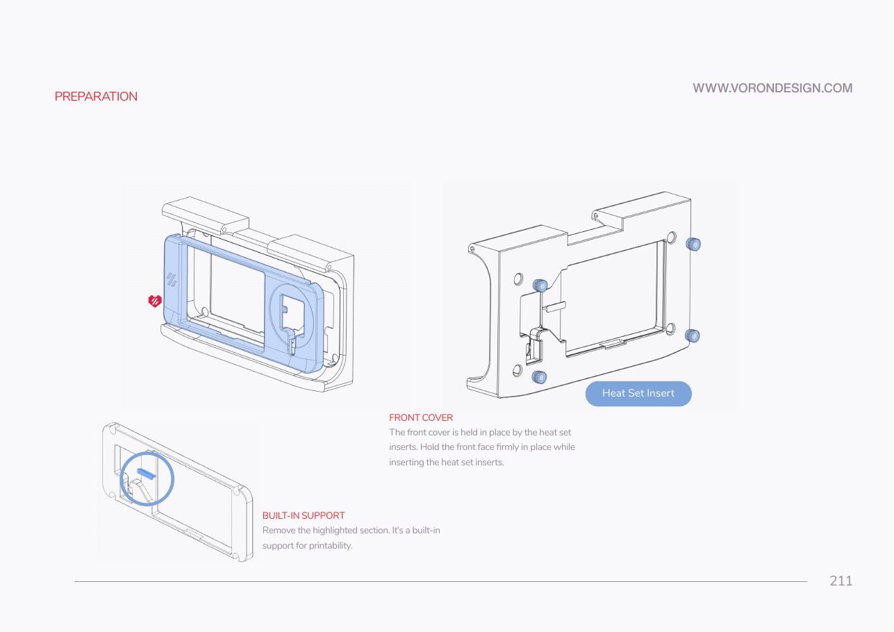 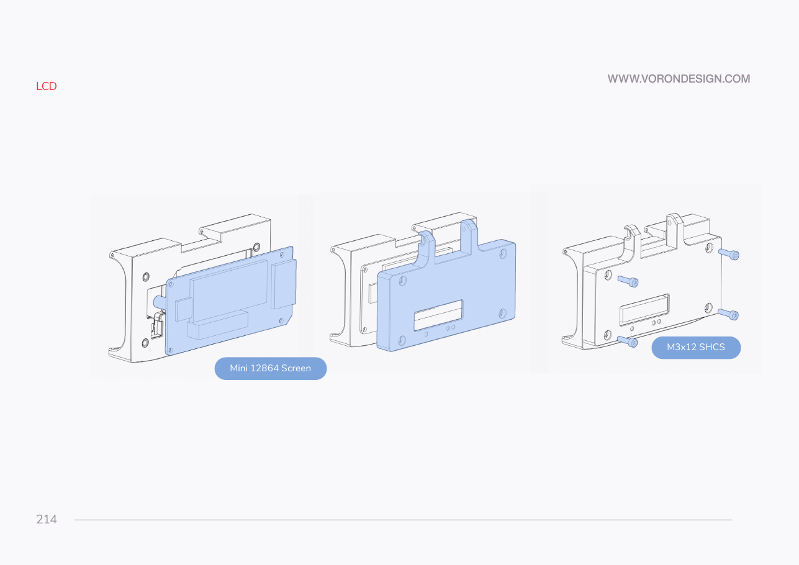 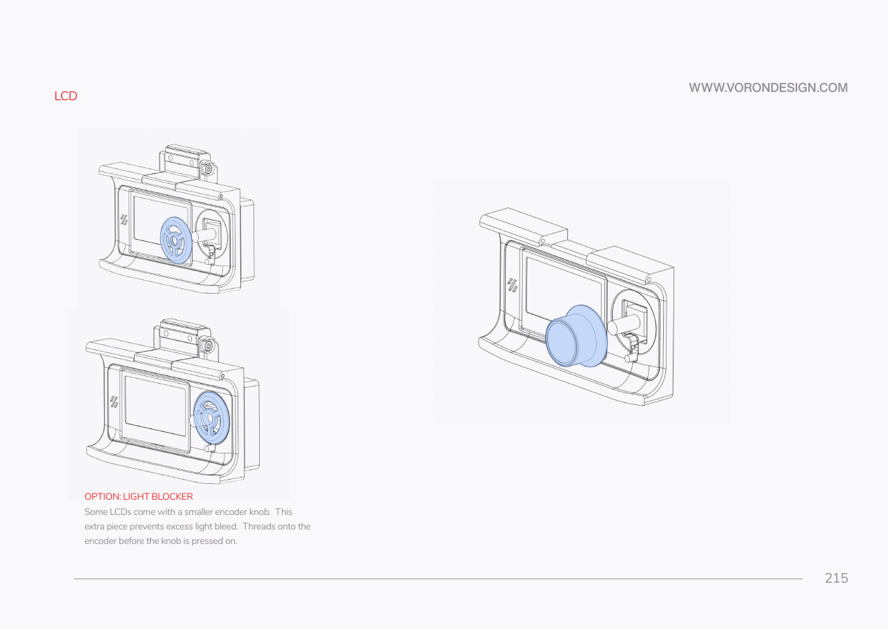 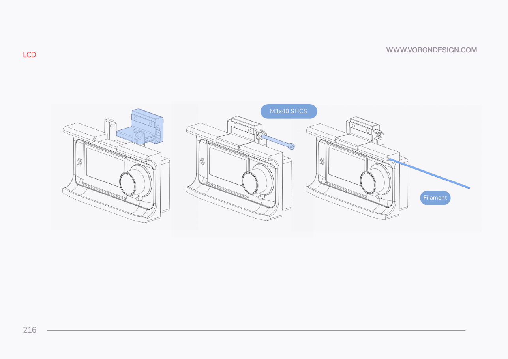
What you're looking at: The four manual pages show the mini12864, the small monochrome LCD with a click-wheel that a stock Voron uses as its display. This kit ships a 4.3" colour touchscreen instead, so all four pages, and every part on them, are dead.
Parts: none. The M3×12 SHCS, M3×40 SHCS and the length of filament these pages call for stay in the bag.
Do: Skip p.211, p.214, p.215 and p.216; they build a display module this kit does not have. Confirm you never printed mini12864_case_front, mini12864_case_rear, [a]_mini12864_case_hinge, [a]_mini12864_case_front_insert or [a]_btt_knob_light_shield.
Check
No mini12864 parts in your bins. The front-centre ring position is filled by the BTT mount from B08.
Caution
Rev D+ / LDO: "For Rev C/D please use The BigTreeTech touchscreen, print the mount from here." The mount STL is in the LDOVoronTrident repo — it is not in the Voron-2 tree. src · mount
Source: Voron manual p.211 · Voron manual p.214–216 · LDO Build Notes p.211, p.214–216 · LDO BTT Pi TFT4.3 mount README
Good stopping point · ~20 min since the last one
every skirt segment dry-fitted and checked for rock, inserts melted into the segments and the two fan grill retainers, and the mini12864 parts set aside unbuilt. Nothing is bolted to the frame yet.
Step 11.5 — Heat-set and face the BTT TFT4.3 mount¶
(no image — see mount README)
What you're looking at: mount.stl is the black printed carrier that holds the BTT Pi TFT4.3 touchscreen and fills the centre-front ring position. [a]_faceplate.stl is the orange bezel that trims the screen aperture. You build it at Ch 10 Step 10.50, before the ribbon is latched.
Parts: mount.stl ×1 (black), [a]_faceplate.stl ×1 (orange), M3×5×4 heat-set inserts ×2, M3×8 SHCS ×2.
Do:
- Press one heat-set insert into each of the two faceplate bosses in the mount.
- Offer the orange faceplate up to the mount and drive an M3×8 SHCS into each side, snug only.
Check
Faceplate sits flush all round with no gap at the top edge; the screen aperture is square to the mount's top rail.
Caution
Rev D+ / LDO: you printed mount.stl (30 g, 44.8 mm tall), not mount_thick.stl (74 g, 67.8 mm). mount_thick exists only to give a pointy tool access to the screen's brightness buttons. If you find you want that access, reprint — LDO links the folder, not a file. src · print plan §6
Source: LDO BTT Pi TFT4.3 mount README
Step 11.6 — Fit the BTT Pi TFT4.3 screen into the mount¶
What you're looking at: The BTT Pi TFT43 is a 4.3" capacitive display that reaches the Raspberry Pi over one flat ribbon carrying power and video. On the back, the white edge socket takes the ribbon and the four corner holes the M2.5×6 screws.
Parts: 4.3" capacitive DSI display ×1, FFC ribbon cable ×1, M2.5×6 screws ×4 (supplied in the BTT packaging).
Do:
- Peel the back film. Slide the ribbon in, metal contacts up and blue tab rearward, then close the latch once.
- Fit the screen, FFC connector at the bottom edge, and drive the four M2.5×6 screws finger-tight.
Check
Screen-end latch closed evenly, ribbon square in the socket, screen square in the faceplate aperture, FFC leaving the slot with no kink.
Tip
leave the front film on until the build is finished; tape over the free end's bare contacts until Ch 10 Step 10.50 latches the Pi end.
Caution
Rev D+ / LDO: "Incorrect orientation of the FFC cables can result in damage to your Raspberry Pi and/or touchscreen." An FFC has no polarity key — the metal contacts are the only clue, and each end is latched exactly once in this build. src
Source: LDO BTT 4.3" screen guide · LDO wiring photo PITFT43_FFC.jpg
Step 11.7 — Fit the touchscreen module into the front skirt run¶
What you're looking at: The finished touchscreen module now becomes a skirt segment in its own right, filling the centre-front gap between the two front skirts. Its top rail has to line up flush with theirs or the front of the machine reads as three separate parts.
Parts: the TFT module built at 10.50 (11.5–11.6) — taped to the front extrusion since Ch 10, ribbon latched at both ends and proved at 12.11 — M3×8 SHCS ×3, M3 roll-in T-nut ×3.
Do:
- Free the module from its tape without pulling the ribbon.
- Roll three M3 T-nuts into the front extrusion.
- Slide the module between the two front skirts, top rails flush, and drive three M3×8 SHCS snug.
Check
The module's top rail is flush and continuous with both front skirt rails; the screen is level; the gaps to front_skirt_a and front_skirt_b are equal.
Caution
Rev D+ / LDO: the manual's p.220 fastener is M3×12 SHCS into the mini12864 case. The BTT mount uses M3×8 SHCS into M3 roll-in nuts — 5 M3×8 and 3 roll-in nuts across steps 11.5 and 11.7. src
Source: Voron manual p.220 · LDO BTT Pi TFT4.3 mount README
Step 11.8 — Route and connect the FFC ribbon to the Pi¶

{kind=link}
{kind=link}
{kind=link}
{kind=link}
{kind=link}
{kind=link}
{kind=link}
{kind=link}
{kind=link}
{kind=link}
{kind=link}
What you're looking at: The FFC is the one cable between screen and Pi, and it is not keyed: the bare contacts are the only orientation clue, and getting it wrong destroys either end. p.221 wires two ribbons to an EXP1/EXP2 header this machine lacks.
Parts: none new · the FFC ribbon cable ×1 is already in, latched at both ends at 10.50, screen end at 11.6 · Pi end at the Pi's DISPLAY connector, metal contacts facing forward, blue tab to the rear, as in RPI_DSI_FFC.jpg.
Do:
- Ignore p.221; it wires EXP1/EXP2 ribbons.
- Follow the ribbon from the module to the Pi: latches closed, a service loop at each end, no tight radius, clear of the front skirts.
- Never open a latch.
Check
Both latches closed, ribbon square and fully seated, no contacts exposed outside either connector, nothing pinched by the skirt or an extrusion edge.
Caution
Rev D+ / LDO: this is the wiring guide's "Connecting the FFC Cable, Ethernet Cable, USB Cable and Frame PE" step, done at 10.50. Screen rotation is a Ch 12 software step, not a wiring one: 12.10 writes it into /boot/firmware/cmdline.txt as video=DSI-1:…rotate= and 12.11 proves it. Do not use display_lcd_rotate, the legacy fake-KMS path, dead on MainsailOS 3.x. src · src
Tip
if Ch 10 Step 10.50 had to leave the Pi end taped because the mount was not printed, connect it now exactly as 10.50 describes.
Source: Voron manual p.221 · LDO wiring guide § Setting up the touch screen · LDO BTT 4.3" screen guide · LDO wiring photo RPI_DSI_FFC.jpg
{kind=link}
Good stopping point · ~10 min since the last one
the touchscreen module (built at 10.50) is bolted into the front of the ring, snug, and its FFC run checked end to end, latched at both ends. Do not leave an FFC half-latched — the latch is what holds the contacts.
Step 11.9 — Fit the belt guards to the skirt segments¶
{kind=link}
{kind=link}
What you're looking at: A belt guard is the orange ring that closes the circular cut-out in a skirt segment over an idler pulley, so nothing can reach a moving belt from outside. Guards a and b are mirror images, and the pair render shows both.
Parts: [a]_belt_guard_a ×2, [a]_belt_guard_b ×2 (orange), M3×8 SHCS ×1 per guard (p.222 shows one; verify on bench).
Do:
- Fit guards to
front_skirt_a,front_skirt_bandkeystone_panel. The plug-panel corner gets its guard in situ at 11.14. - Dry-fit each corner: the boss drops in only one way round. Drive one M3×8 SHCS into the insert from 11.2.
Check
Three guards fitted flush, each aperture concentric with its cut-out, and the fourth set aside for 11.14 with its corner known.
Source: Voron manual p.217
Step 11.10 — Populate the keystone panel¶
What you're looking at: The keystone panel is the rear skirt segment with two rectangular cut-outs for snap-in network modules. The CAT6 keystone is the RJ45 socket that Ch 10's Ethernet run plugs into from the inside; the orange blank fills the second slot.
Parts: keystone_panel ×1, Keystone CAT6 insert ×1 (supplied), [a]_keystone_blank_insert ×1 (orange; the second is a spare).
Do: Snap the CAT6 keystone into whichever of the two slots suits your cable run to the Pi's Ethernet port, and the orange blank into the other. Both clip in from the inside face, no fasteners.
Check
Both slots filled, both inserts flush with the outside face, neither rattling. The RJ45 opening faces out.
Tip
if you want more of the LDO logo on the machine, ldo_bestagon_insert snaps into any of the skirt hexagons — print extras. src
Source: Voron manual p.217 · LDOVoron2 STLs/
Step 11.11 — Build the electronics-bay fan modules¶
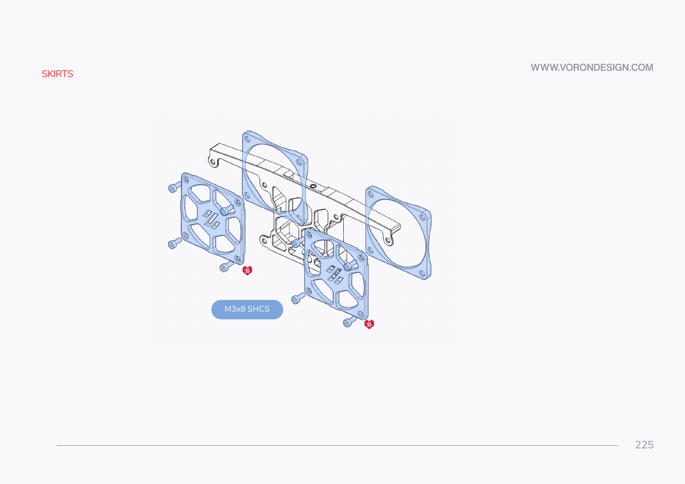 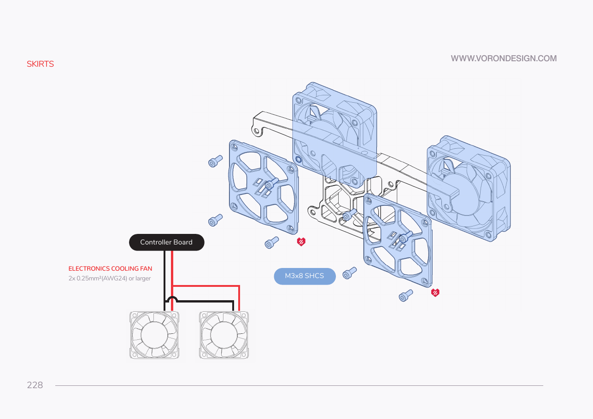 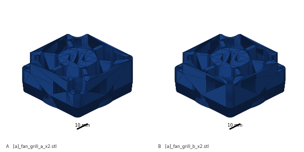
{kind=link}
{kind=link}
{kind=link}
What you're looking at: Each side_fan_support has two fan openings. This kit has two fans, two retainers and four grills, so both fans go in the right-hand support, the PSU side seen from the front, and the left support gets grills only. Grills a and b are mirrored.
Parts: 60×60×20 mm 24 V fan ×2 · side_fan_support ×2 · [a]_fan_grill_a ×2 and [a]_fan_grill_b ×2, orange · [a]_fan_grill_retainer ×2, from 11.3 · M3×8 SHCS ×4 per fan, 8 total · stack at each populated opening, from outside in: orange grill, support wall, then the retainer directly behind the wall with the fan captured in its frame and its leads toward the bay. The screws never pass through the fan, so the retainer's inserts must sit within ~8 mm of the grill face for an M3×8 to reach them (verify on bench).
Do:
- Build both right-hand openings to the stack above, four M3×8 SHCS from outside into the inserts.
- Both airflow arrows into the bay. Leads uncut.
- Blank the left support with the remaining grills, no retainer (verify on bench).
Check
Two fans in the right-hand support, spinning freely, screws snug without crushing the fan bodies, arrows pointing into the bay. Left support: grills only.
Caution
Rev D+ / LDO: the kit contains two 60×20 fans, two retainers, four grills and one 3×2 splicer PCB. The manual draws fans in both supports; count the fans you have. LDO's Rev D bay photos S1, S4, S6 put both beside the PSU. No airflow direction is given; both extracting also works if matched. src · src
Tip
[a]_fan_grill_open_optional_x2 is an alternate grill with more open area and less filtering, if the bay runs warm. The two blank grills need their own fixing (verify on bench). src
Source: Voron manual p.225 · Voron manual p.228 · LDO Rev D 350 BOM · Voron-2 STLs/Skirts/
Step 11.12 — Pre-load the skirt T-nuts¶
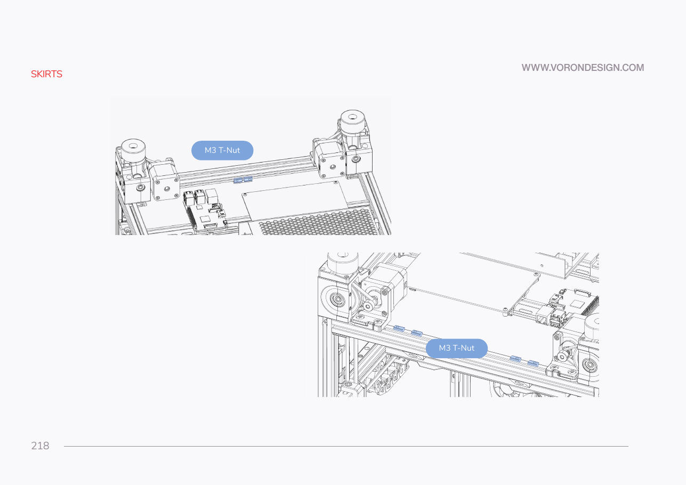 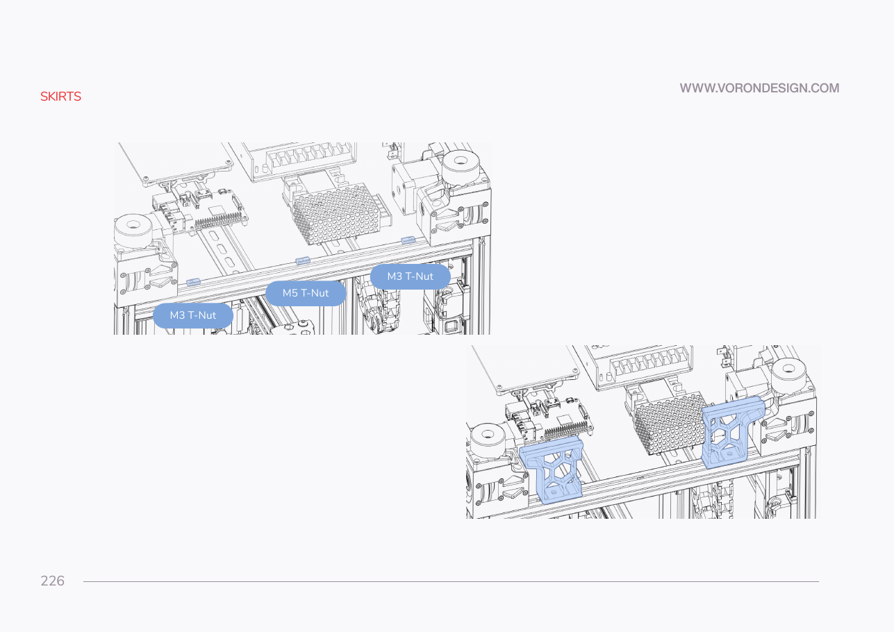 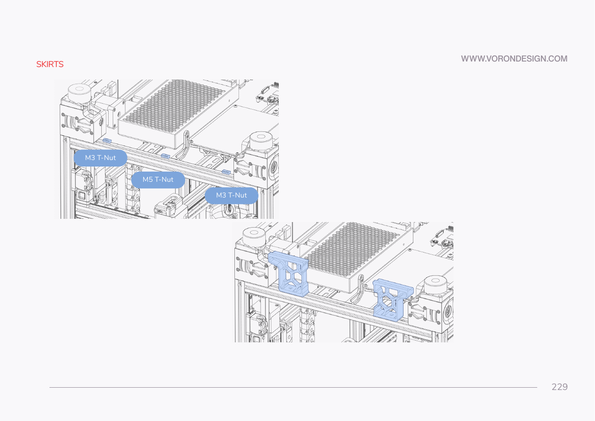
{kind=link}
{kind=link}
{kind=link}
What you're looking at: A roll-in T-nut drops into an extrusion slot and rotates a quarter turn to lock, so it can be added after a frame is built. Once a skirt segment covers the slot, no nut can get in.
Parts: M3 roll-in T-nut ×12 — front extrusion ×4 (p.218), rear ×4 (p.222), each side ×2 (p.226, p.229) · M5 roll-in T-nut ×2 — one per side, under the fan support, where p.226/p.229 show the larger M5×10 BHCS. The TFT mount's three M3 T-nuts went in at 11.7.
Do:
- Roll every T-nut the ring needs into the frame extrusions before any segment goes up, each left loose at roughly its position.
- An M3 at each skirt-to-frame screw position, an M5 between the two M3 per side.
Check
Every T-nut sits flat in its slot and slides with light finger pressure. None jammed, none dropped inside a closed extrusion end.
Caution
Rev D+ / LDO: "Due to the tight tolerances of the extrusions and roll-in t-nuts it is advisable to either test fit before assembly to identify the sides of the extrusions that fits the best or to pre-load the t-nuts into the extrusions." src
Source: Voron manual p.218 · Voron manual p.226 · Voron manual p.229 · LDO Build Notes p.218 · Video: Part 5 @4:24:04
Good stopping point · ~15 min since the last one
three belt guards on their segments (the fourth waits for the plug panel at 11.14), keystone panel populated, the right-hand fan support built with both fans and the left one blanked, and every skirt T-nut pre-loaded in the right slot. The ring is still off the machine.
Step 11.13 — Mount the front skirt segments¶
{kind=link}
What you're looking at: The front run is the most-looked-at part of a finished Voron: skirt, touchscreen module, skirt, reading as one continuous band. Snugging first and only then closing the joints is what makes the two seams disappear.
Parts: front_skirt_a_350 ×1, front_skirt_b_350 ×1, M3×8 SHCS (verify on bench).
Do:
- Hang each front skirt on its T-nuts, belt-guard aperture over the front idler, and drive the M3×8 SHCS up from underneath.
- Snug them, back off a quarter turn, push both hard against the TFT module, then tighten.
Check
Front run reads as one continuous band: skirt–module–skirt with equal, tight joints and a flush top rail. No daylight at the front idler apertures.
Source: Voron manual p.219
Step 11.14 — Mount the rear skirt run¶
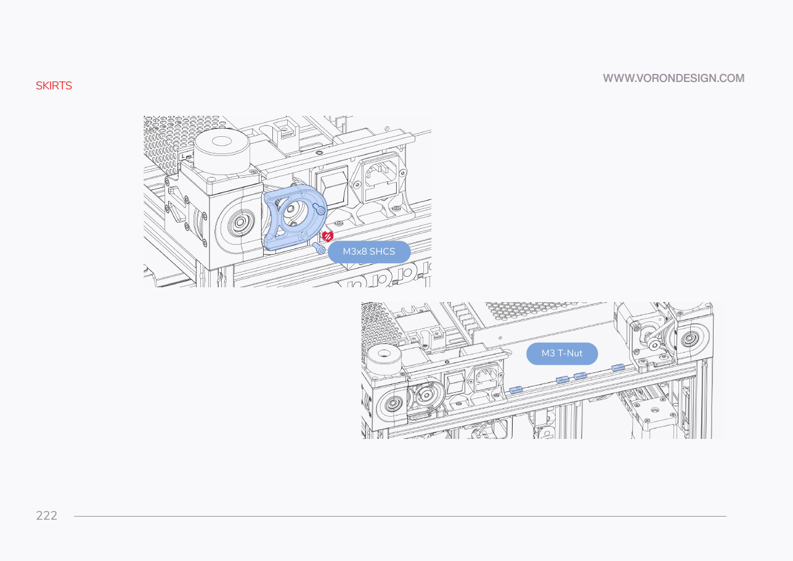 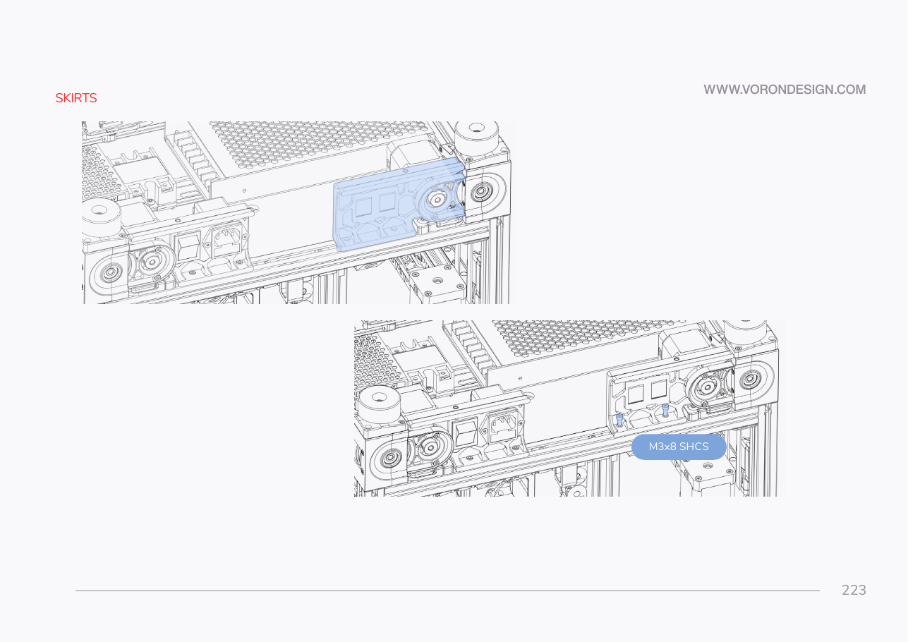 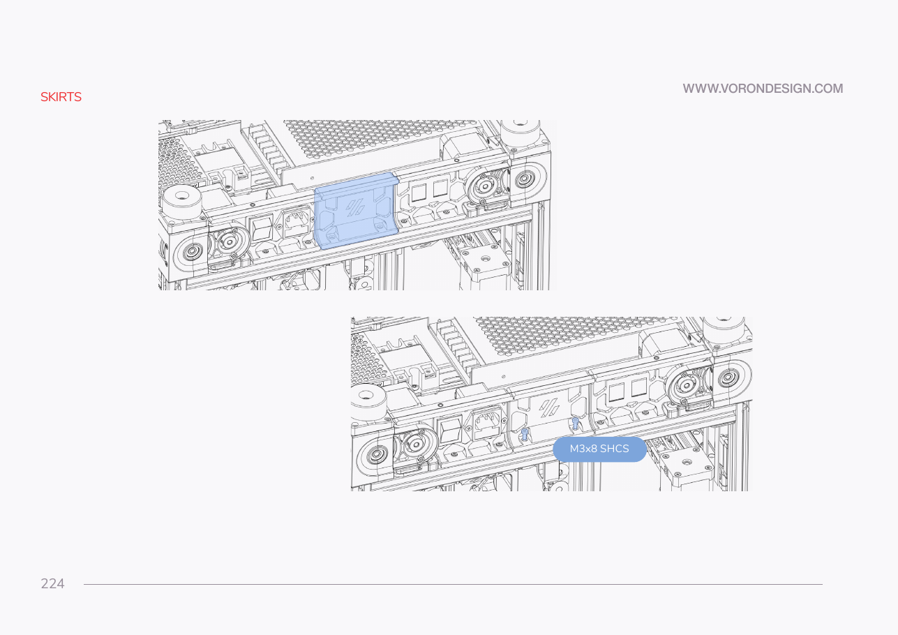
{kind=link}
{kind=link}
{kind=link}
What you're looking at: The rear run has three segments. One of them, the power_inlet_IECGS_1mm panel carrying the AC inlet, has been on the machine since Ch 09 and never moves. p.222 is not a segment: it shows the last belt guard going onto that panel.
Parts: the fourth belt guard from 11.9 + M3×8 SHCS ×1 (p.222), keystone_panel ×1 (from 11.10, guard already on), rear_center_skirt_350 ×1, the already-fitted power_inlet_IECGS_1mm segment, M3×8 SHCS ×4 into the four M3 T-nuts pre-loaded at 11.12.
Do:
- Belt guard onto the mounted plug panel, one M3×8 SHCS into its insert from outside.
keystone_panelinto the far rear corner, thenrear_center_skirt_350into the gap.- Feed the Ethernet through the keystone, snug, push the joints closed, tighten.
Check
Rear run continuous and flush, all four guards on, the AC switch moving freely, RJ45 keystone square, nothing pinching the Ethernet or AC leads.
Caution
Rev D+ / LDO: the inlet segment is power_inlet_IECGS_1mm — the 1.0 mm AC inlet with the integrated switch. The 1.2 mm variants and power_inlet_filtered are wrong for this kit. p.222–224 are drawn from the rear, plug panel on the image-left, which is the printer's right; follow the panel on your frame, not the picture's side. src
Source: Voron manual p.222–224 · LDO Build Notes p.222–224 · Video: Part 6 @1:39:57
Step 11.15 — Mount the first side skirt run¶
{kind=link}
What you're looking at: Each side run is three segments: side_skirt_a at the front, the fan support in the middle, side_skirt_b at the rear. The two skirts go on first and stay loose, because the fan support drops into the gap they leave.
Parts: side_skirt_a_350 ×1, side_skirt_b_350 ×1, M3×8 SHCS ×2 — the right-hand fan support from 11.11 (two fans) waits for 11.16.
Do:
- On the right-hand side seen from the front, fit
side_skirt_aat the front andside_skirt_bat the rear, leaving the fan-support gap. - Drive the M3×8 SHCS into the pre-loaded T-nuts, snug not tight. M5 T-nut stays empty for 11.16.
Check
Both segments parallel to the extrusion, top rails level with the front and rear runs, the gap matching the fan module's width.
Source: Voron manual p.226 · Voron manual p.227
Step 11.16 — Drop in the fan module and close the side run¶
{kind=link}
What you're looking at: The right-hand fan support from 11.11, both fans in it, is the middle segment of the side run. It is trapped rather than screwed at its ends, so pushing the two skirts against it closes both joints.
Parts: the right-hand fan support from 11.11, M5×10 BHCS ×1.
Do:
- Slide the support into the gap from outside, grills out, leads into the bay.
- Push the skirts against it to close both joints.
- Drive the M5×10 BHCS up into the M5 T-nut, then tighten this run.
Check
The whole side one band with flush joints, both fans spinning freely, no lead trapped between the support and the extrusion.
Source: Voron manual p.227 · Voron manual p.230
Step 11.17 — Mount the second side skirt run¶
What you're looking at: The same three-segment run on the left-hand side. Its middle segment is the second side_fan_support, no fans in it, just the two blank grills from 11.11. When it closes, the skirt ring is continuous all the way round.
Parts: side_skirt_a_350 ×1, side_skirt_b_350 ×1, the left-hand side_fan_support with its two blank grills, M3×8 SHCS ×2, M5×10 BHCS ×1.
Do: Repeat 11.15 and 11.16 on the left-hand side with the blanked support. p.229 shows the T-nuts, p.230 the fasteners; both draw fans in this support and yours has none.
Check
The ring closed all the way round, every joint tight, every top rail flush. Two fans right, two blank grills left.
Source: Voron manual p.229 · Voron manual p.230
Good stopping point · ~20 min since the last one
front, rear and both side skirt runs mounted, both bay fans trapped in the right-hand run, the left run blanked. The ring is complete all the way round; no run is half-fastened.
Step 11.18 — Verify the bay-fan wiring¶
{kind=link}
What you're looking at: The two manual pages describe a BTT Octopus controller this kit does not have. You are confirming Ch 10's wiring instead: both fans on one 3×2 splicer PCB, that PCB on its printed spacer, and the run landing on the Leviathan's FAN2 port.
Parts: 3×2 XH splicer PCB ×1, its printed spacer (supplied printed by LDO).
Do:
- Ignore p.228 and p.231.
- Confirm Ch 10's wiring: both fans on the 3×2 splicer, the splicer on its printed spacer, the run on FAN2 / PF7.
- Dress the leads into the duct, clear of the blades.
Check
Both fans on one splicer; splicer on its spacer, not touching aluminium; PCB FAN plugged into FAN2/PF7; no lead within reach of a blade.
Caution
Rev D+ / LDO: fan map for this build — PCB fan → FAN2/PF7; LED strip → LED-Strip/PE6; filter fan → FAN3/PF9. "Please remember to mount 3x2 splicing PCBs using the printed part to prevent a short with the extrusion." src
Source: Voron manual p.228 · Voron manual p.231 · LDO wiring guide § Connecting the fans and the LED strip
Step 11.19 — Fit the bestagon insert (optional)¶
(no image — see LDO STLs README)
What you're looking at: The bestagon insert is a purely cosmetic orange plug that snaps into one of the hexagonal openings in a skirt segment. Nothing depends on it.
Parts: ldo_bestagon_insert ×1 (orange), or as many as you printed.
Do: Push the insert into one of the skirt hexagons from the outside until it snaps. Pick a hexagon on the front-left or front-right skirt where it reads without competing with the touchscreen.
Check
Insert flush and retained; the hexagon is not stressed white at the corners.
Source: LDOVoron2 STLs/
Step 11.20 — VHB the bottom-panel clips and hinges¶
{kind=link}
What you're looking at: 3M VHB is a double-sided acrylic foam tape that reaches most of its strength within an hour and does not come off again. These six printed parts, four clips and two hinges, are what the bottom panel bonds to.
Parts: bottom_panel_clip_x4 ×4, bottom_panel_hinge_x2 ×2, 3M VHB tape ×6 pads.
Do:
- Put the printer on its side, as at 10.1.
- Wipe all six pad faces with IPA and let it flash off.
- Cut six VHB pads to match, press one onto each, liners left on.
Check
Six parts, six pads, each centred with no overhang onto a curved face, liners still on.
Source: Voron manual p.232
Step 11.21 — Fit the bottom panel¶
{kind=link}
What you're looking at: The bottom panel is the 4 mm acrylic floor of the electronics bay, and it is a door: VHB-bonded to two rear hinges and held by four snap clips, it unclips at the front and swings down for access through Ch 13.
Parts: bottom panel (acrylic, black, 469×469×4 mm) ×1, the six taped parts from 11.20, M3×8 SHCS ×6, M3 T-nut ×6 (p.233 draws the screws straight into the extrusion — one nut per screw, verify on bench).
Do:
- Screw the hinges to the rear extrusion and the clips front and sides, one M3×8 SHCS each.
- Peel the film off both panel faces, pull the liners, and press the panel home, hinge edge at the rear.
Check
Panel square, equal margins, no rock, every pad bonded. After an hour, release the front clips and swing it down, clearing the skirt ring.
Caution
Rev D+ / LDO: the bottom panel is the 4 mm acrylic, not the 3 mm deck panel. If you are holding a 469×469 panel and cannot tell which is which, caliper it — 3 mm is the deck (fitted back in Ch 02), 4 mm is this one. src
Tip
swing the door with the machine still on its side or up on blocks; confirm every duct is reachable, then close it.
Source: Voron manual p.232 · Voron manual p.233 · LDO Rev D 350 BOM
Good stopping point · ~20 min since the last one
bay-fan wiring verified against Ch 10, bestagon insert decided, VHB pads pressed and the bottom panel hung on its rear hinges and front clips. Leave the VHB to cure undisturbed — do not swing the door open until it has; do not press a pad and walk away before the panel is on it.
Step 11.22 — Choose the Z belt cover variant¶
{kind=link}
{kind=link}
What you're looking at: A Z belt cover is a printed shroud that clips over each of the four Z belts at a frame corner, so nothing can be drawn into the belt. LDO's alternate _a_led version adds a cable slot for LED wiring routed through a Z-motor opening.
Parts: z_belt_cover_a_x2 ×2 and z_belt_cover_b_x2 ×2 — or LDO's z_belt_cover_a_led in place of z_belt_cover_a.
Do: Check how Ch 10 routed the chamber LED wiring. Ch 10 used the extrusion slot, so the stock covers apply. If any LED wire passes through a Z-motor opening, print LDO's z_belt_cover_a_led for that corner, a 7 g, 25-minute part.
Check
You can state, per corner, which cover goes on and why. No cable crosses a stock cover's sealing face.
Caution
Rev D+ / LDO: "PAGE 234 Use the alternate Z-belt cover if you routed the LED wires through the Z-motor opening." src · part
Source: Voron manual p.234 · LDO Build Notes p.234 · LDOVoron2 z_belt_cover_a_led.stl
Step 11.23 — Load each cover with a hammerhead nut¶
What you're looking at: A hammerhead T-nut drops straight into an extrusion slot from the face rather than rolling in from an end, then rotates a quarter turn under load to lock. Starting the screw keeps the nut captive in the cover's recess.
Parts: Z belt covers ×4, M3 hammerhead T-nut ×4, M3×6 BHCS ×4.
Do: Drop an M3 hammerhead nut into the recess on the back of each cover and start an M3×6 BHCS into it from the front, two or three turns only, so the nut stays captive but free to rotate.
Check
Nut captive, screw started, nut still able to turn, the head still reachable with a 2 mm hex once the cover is on.
Source: Voron manual p.234
Step 11.24 — Fit the first Z belt cover¶
{kind=link}
What you're looking at: The cover goes on with the belt already threaded through its slot, which is why the belt is pinched flat first. The click you feel is the hammerhead nut rotating and biting inside the extrusion channel.
Parts: one loaded cover from 11.23.
Do:
- Pinch the Z belt flat and slide the cover in, belt through its slot, hammerhead nut into the channel.
- Hold the cover square, tighten the M3×6 BHCS. If the nut spins, back off and re-seat it squarely.
Check
Cover flat against the extrusion, the Z belt running through freely with no rub, the cover not moving when pushed.
Source: Voron manual p.235
Step 11.25 — Fit the remaining three Z belt covers¶
{kind=link}
{kind=link}
What you're looking at: The remaining three corners are identical. The full-travel run afterwards is the real test: a cover that touches a belt makes noise now and cuts the belt edge over months.
Parts: the three remaining loaded covers.
Do: Repeat 11.24 at the other three Z belt corners. Then run the gantry up and down its full travel by hand and watch each cover.
Check
Four covers on, all four belts running clear, no rubbing anywhere in the full Z travel.
Tip
p.237 is a page of Voron history, nothing to build.
Source: Voron manual p.236 · Voron manual p.237
Good stopping point · ~15 min since the last one
all four Z belt covers on, each with its hammerhead nut, and the gantry runs its full Z travel without touching one.
Step 11.26 — Break out the Nevermore printed supports¶
(no image — see LDO Nevermore V5 Duo guide)
What you're looking at: The Nevermore is a recirculating activated-carbon filter that sits inside the chamber and scrubs the fumes ASA gives off. Four printed parts make it: a plenum holding two blower fans, its lid, and a magnetic cartridge with its own lid for the carbon.
Parts: V2_Duo_Plenum, V2_Duo_Plenum_LID, Regular_Cartridge, Regular_Cartridge_Lid.
Do: The cartridge and the plenum each carry a built-in printed support. Push them out; they break at the interface. Do not cut them out with a knife.
Check
Both supports removed cleanly, no torn layers on the sealing faces, the cartridge lid slides freely in the cartridge grooves.
Caution
Rev D+ / LDO: you are building the Regular cartridge, not the XL — the XL wants a larger carbon charge and a faster, louder fan. src
Source: LDO Nevermore V5 Duo guide § Preparation · Nevermore Micro repo
Step 11.27 — Modify both 5015 fan enclosures¶
(no image — see LDO Nevermore guide § Preparation)
What you're looking at: A 5015 blower is a 50 × 15 mm squirrel-cage fan: it makes pressure rather than free-air flow, which is what pushes chamber air through packed carbon. Both housings have to be opened and a section of plastic removed so they fit the plenum.
Parts: 5015 fan ×2 (supplied in the kit's Nevermore bag).
Do:
- Pry the tabs holding each fan's enclosure together and separate it.
- With wire snips, remove the section of plastic the guide highlights from each housing.
- Use snips, not a blade.
Check
Both fans modified identically, impellers still spin freely, no cracked housing, no swarf left inside the scroll.
Source: LDO Nevermore V5 Duo guide § Preparation · Video: Extras! @2:30:00
Step 11.28 — Heat-set the Nevermore parts¶
(no image — see LDO Nevermore guide § Preparation)
What you're looking at: Six inserts, three destinations: four in the fan mounting holes, one in the plenum for its lid screw, one in the cartridge for its lid screw. Nothing else on the Nevermore takes a threaded fastener.
Parts: M3×5×4 heat-set inserts ×6.
Do: Four inserts go into the fan mounting holes, one into the plenum, one into the cartridge. Six total.
Check
All six flush and square; an M3 screw starts freely in each.
Source: LDO Nevermore V5 Duo guide § Preparation · Video: Extras! @2:24:31
Step 11.29 — Cut the connector off the long-wire fan¶
(no image — see LDO Nevermore guide § Preparation)
What you're looking at: The fan with the longer lead has its plug cut off so both fans can be soldered to the bridge PCB, a small board that parallels them onto one lead. The cut-off pigtail is the only connector that mates with the FILTER FAN extension.
Parts: the 5015 fan with the longer lead.
Do: Cut the JST connector off the longer-leaded fan. Keep the connector pigtail; it gets soldered back onto the bridge PCB at 11.33.
Check
Connector cut free and set aside somewhere you will not lose it; both fan leads still long enough to route through the plenum.
Source: LDO Nevermore V5 Duo guide § Preparation
Good stopping point · ~15 min since the last one
Nevermore supports broken off, both 5015 enclosures trimmed, inserts melted, and the long-wire fan's connector cut off with the leads tinned. Nothing is glued and nothing is soldered to the bridge PCB yet.
Step 11.30 — Fit the first fan into the plenum¶
(no image — see LDO Nevermore guide § Install Fans)
What you're looking at: The plenum's wire channel is a moulded groove that carries both fans' leads to one corner. Routing the wire before seating the fan is the only order that works: once the fan is in, the channel is behind it.
Parts: the cut-lead fan from 11.29, plenum.
Do: Route the fan's wires from the right side of the plenum, right to left along the wire channel, with tweezers. Then seat the fan in the right side and pull the wire flat in the channel.
Check
Fan seated fully with the impeller clear of the plenum wall; wire flat in the channel, not crossing the fan aperture.
Source: LDO Nevermore V5 Duo guide § Install Fans
Step 11.31 — Fit the second fan and trim the leads¶
(no image — see LDO Nevermore guide § Install Fans)
What you're looking at: The second fan mirrors the first. Cutting all four wire ends to the same 30–40 mm now is what makes the bridge-PCB soldering at 11.33 tidy, and it also fixes the plenum's mounting position later.
Parts: the second 5015 fan.
Do: Route its wires from the left side of the plenum, right to left, and seat the fan in the left side. Now cut both fans' wires to equal length, roughly 30–40 mm proud of the enclosure.
Check
Both fans seated, all four wire ends the same length at 30–40 mm, both impellers spin freely.
Source: LDO Nevermore V5 Duo guide § Install Fans
Step 11.32 — Bolt the fans to the plenum¶
(no image — see LDO Nevermore guide § Install Fans)
What you're looking at: The M3×16 BHCS pass through the fan bodies into the heat-sets from 11.28. A 5015 housing is thin plastic and will distort if these are cranked, which shows up as the impeller rubbing.
Parts: M3×16 BHCS ×4.
Do: Drive the four M3×16 BHCS into the fan heat-sets from 11.28. Snug only; a 5015 housing distorts and the impeller rubs if you crank them.
Check
Both fans held with no rock; spin each impeller by hand and listen for rub.
Source: LDO Nevermore V5 Duo guide § Install Fans
Step 11.33 — Solder the fans to the bridge PCB¶
(no image — see LDO Nevermore guide § Install Fans)
What you're looking at: The bridge PCB is a small board that joins both fans and the saved pigtail into one 24 V pair, red to the top pads, black to the bottom. A solder bridge here puts a dead short across the mainboard's 24 V fan output.
Parts: bridge PCB ×1, the connector pigtail saved at 11.29.
Do:
- Solder both fans' wires and the pigtail to the bridge PCB, red to the top pads, black to the bottom.
- Arrange the wires as the guide's photo shows.
- Meter for a short between positive and negative.
Check
Continuity reads open between + and −; all six joints shiny and mechanically sound; PCB sits in its compartment without pressing on a wire.
Caution
A bad solder here shorts a 24 V rail. LDO: "A bad solder will result in permanently damaging the controller board." Do the meter check before anything gets plugged in. src
Source: LDO Nevermore V5 Duo guide § Install Fans · Video: Extras! @2:36:20
Good stopping point · ~20 min since the last one
both fans seated in the plenum, leads trimmed to length and soldered to the bridge PCB, and the pair metered for a short. The plenum is open and unglued.
Step 11.34 — Glue the plenum magnets¶
(no image — see LDO Nevermore guide § Nevermore Assembly)
What you're looking at: The plenum and cartridge hold together on magnets rather than screws, so the cartridge can be pulled off to recharge the carbon. Every magnet in the plenum must go in with the same pole facing out, otherwise half of them will repel the cartridge.
Parts: 6×3 mm neodymium magnets, super glue.
Do: Drop a spot of super glue into each magnet pocket in the plenum and press a magnet in, one at a time, all with the same pole facing out. Press each fully home so none stands proud.
Check
All plenum magnets flush and the same polarity across the set: a spare magnet is attracted to every one the same way.
Source: LDO Nevermore V5 Duo guide § Nevermore Assembly · Video: Extras! @2:59:56
Step 11.35 — Close the plenum lid¶
(no image — see LDO Nevermore guide § Nevermore Assembly)
What you're looking at: The lid slides into grooves in the plenum body and one screw holds it. It closes the fan compartment so the blowers push air through the cartridge rather than straight back out.
Parts: V2_Duo_Plenum_LID, M3×6 BHCS ×1 (optional second M3×4 BHCS for symmetry).
Do: Slide the lid into the plenum body's grooves and secure with the M3×6 BHCS into the plenum heat-set. Add the optional M3×4 on the other side if you want it to look symmetric.
Check
Lid fully home in both grooves, screw snug, no wire pinched at the lid edge.
Source: LDO Nevermore V5 Duo guide § Nevermore Assembly
Step 11.36 — Glue the cartridge magnets to match¶
(no image — see LDO Nevermore guide § Cartridge Assembly)
What you're looking at: This is the matching half of 11.34, and the reason for the marker: a magnet's polarity is invisible once it is glued in. Stick each one to the finished plenum first, mark the exposed face, and glue it that way round.
Parts: 6×3 mm neodymium magnets, super glue, a marker.
Do: Stick each magnet to the assembled plenum, mark the exposed face, and keep that orientation. Then glue them into the cartridge pockets one at a time, marked face out.
Check
Cartridge offers up to the plenum and snaps home; it holds against a firm shake; all magnets flush.
Source: LDO Nevermore V5 Duo guide § Cartridge Assembly
Step 11.37 — Fill and close the cartridge¶
(no image — see LDO Nevermore guide § Cartridge Assembly)
What you're looking at: The cartridge is the removable box that holds the activated carbon, acid-free pellets, which are not in the kit. An empty cartridge still has to be fitted and closed, or the plenum just stirs the chamber.
Parts: Regular_Cartridge_Lid, M3×6 BHCS ×1, activated carbon pellets — not supplied.
Do: Fill the cartridge with acid-free activated carbon pellets, then slide the lid into its grooves and secure with the M3×6 BHCS into the cartridge heat-set.
Check
Cartridge full but not packed so tight that airflow stops; lid home; no pellets loose in the grooves.
Caution
Media not in the kit. LDO: "NOT INCLUDED WITH THE KIT", and acid-free pellets are specified. Nevermore media is on the deferred list for this build, so install and wire the filter now and fill the cartridge later. Fit the empty, closed cartridge for now so the plenum is sealed. src
Source: LDO Nevermore V5 Duo guide § Cartridge Assembly
Good stopping point · ~20 min since the last one
plenum and cartridge magnets glued in matching polarity, both lids closed, cartridge filled. Never stop between gluing the plenum magnets and the cartridge magnets: the second set has to be matched to the first while you still know which way round they went.
Step 11.38 — Mount the plenum in the chamber¶
{kind=link}
What you're looking at: The plenum bolts to the inside faces of the two bed extrusions, low and inboard, where it is below the bed surface and out of the gantry's way. The photo is LDO's placement reference, with the two T-nuts already rolled in.
Parts: M3 roll-in T-nut ×2, M3×12 SHCS ×2.
Do: Roll one M3 T-nut into the inside face of each bed extrusion, not the top slot, and bolt the plenum on with two M3×12 SHCS. The fan leads were cut to length for this position at 11.31.
Check
Plenum solid on the extrusions, sitting inboard and below the bed surface; nothing it can foul as the gantry descends; both screws snug.
Source: LDO Nevermore V5 Duo guide § Installation for Voron V2.4 · LDO wiring photo nevermore_base_placement.jpg
{kind=link}
Step 11.39 — Attach the cartridge¶
(no image — see LDO Nevermore guide § Installation for Voron V2.4)
What you're looking at: Nothing but magnets holds the cartridge on. That is the point: carbon is consumable, and this joint is the one you will open every few hundred hours.
Parts: cartridge from 11.37.
Do: Slide the cartridge along until the magnets take, and let it pull itself home.
Check
Cartridge seated square on the plenum with no gap at the joint; it comes off with a deliberate pull and not with an accidental knock.
Source: LDO Nevermore V5 Duo guide § Installation for Voron V2.4
Step 11.40 — Connect the filter fan¶
(no image — see LDO wiring guide § Connecting the Fans and the LED Strip)
What you're looking at: The FILTER FAN extension is the kit lead already run to FAN3 in Ch 10 Step 10.48 and left coiled at the rear of the chamber. This step mates the Nevermore's pigtail to it. The Nevermore guide names an Octopus pin; this machine's port is FAN3 / PF9.
Parts: the kit's FILTER FAN extension wire.
Do: Mate the Nevermore's pigtail with the FILTER FAN extension and follow it back to the Leviathan. It lands on FAN3 / PF9. Confirm that header's voltage-selection jumper is set for 24 V before anything is powered.
Check
Filter fan on FAN3/PF9; 24 V jumper confirmed; the lead is routed in the duct and cannot be caught by the bed or the gantry.
Caution
Rev D+ / LDO: the Nevermore guide was written for a BTT Octopus and tells you to use "Octopus Fan3 - Pinout PD13". This machine has a Leviathan. Use FAN3 / PF9 from the Rev D wiring guide's fan table. src
Source: LDO wiring guide § Connecting the fans and the LED strip · Video: Extras! @2:48:31
Step 11.41 — Note the filter fan config for Ch 12¶
(no image — see LDO Nevermore guide § Configuration printer.cfg)
What you're looking at: Nothing to build: you are writing down a pin number so Ch 12 does not have to re-derive it. LDO's published config section is right in shape but names the wrong board's pin.
Parts: none.
Do: Write the pin on a tag and tape it to the plenum. LDO's [heater_fan exhaust_fan] section is right in shape but its pin: PD13 is the Octopus pin and must become the Leviathan's PF9. Step 12.32 replaces it with [fan_generic nevermore] on the same pin.
Check
Tag on the plenum reading "FILTER FAN → FAN3 / PF9". Ch 12's config checklist has the Nevermore section on it.
Source: LDO Nevermore V5 Duo guide § Configuration printer.cfg · leviathan-printer-rev-d-sbv2.cfg
Step 11.42 — Fit the bowden retainer¶
{kind=link}
{kind=link}
What you're looking at: The bowden retainer is a small printed clamp on the top rear extrusion that holds the PTFE tube guiding filament from the spool into the toolhead umbilical. Its only job is to stop the tube kinking where it changes direction.
Parts: bowden_retainer ×1, M3 hammerhead T-nut ×1, M3×8 SHCS ×1.
Do:
- Drop the hammerhead nut into the retainer's recess, start the M3×8 SHCS, and slide it onto the top rear extrusion.
- Position it so the PTFE curves smoothly into the toolhead umbilical, then tighten to lock.
Check
Retainer solid on the extrusion; the PTFE passes through with light drag only; no sharp bend where the tube leaves the retainer.
Source: Voron manual p.257 · Voron manual p.258 · Video: Part 9 @3:13:57
Step 11.43 — Fit the spool holder arm¶
{kind=link}
What you're looking at: The spool holder is the printed arm that carries a 1 kg filament spool on the rear of the machine. The two short PTFE offcuts pressed into its grooves are the bearing surface the spool turns on.
Parts: spool_holder ×1, PTFE tube offcuts ×2 (4 mm OD), M5 T-nut ×2, M5×16 BHCS ×2 (verify on bench).
Do:
- Press the two short PTFE lengths into the grooves along the arm.
- Roll the M5 T-nuts into the rear vertical extrusion at spool height, offer the arm up, and drive the M5×16 BHCS home.
Check
Arm level and solid enough for a full 1 kg spool, both PTFE inserts seated, a spool spinning with light finger pressure without binding.
Source: Voron manual p.259 · Video: Part 9 @3:11:11
Good stopping point · ~15 min since the last one
Nevermore mounted in the chamber, cartridge attached, filter fan connected to the Ch 10 lead, bowden retainer and spool holder arm fitted. Its config is [fan_generic nevermore] on PF9 (11.41) — Ch 12 Step 12.32 already wrote it; confirm it is there before you close this session.
Step 11.44 — Assemble the Clicky-Clack door frame¶
(no image — see KB3D install guide · mod README)
What you're looking at: Clicky-Clack is the magnetic-latch front door: a 2020 aluminium frame around one clear acrylic panel, hung on lift-off hinges and closed by a magnetic handle and latch. The corners are blind joints, a screw through an access hole into a tapped end face.
Parts: door frame extrusions, 2 × HFSFB5-2020-470-TPW (X, 470 mm) and 2 × HFSFB5-2020-530-LCH-RCH (Z, 530 mm) for a 350 · M5×16 BHCS ×4 · the 480 × 500 × 3 mm clear acrylic door panel · sort the four extrusions by eye: two show an M5 thread in the end face, the other two a round access hole through the side wall near each end (verify on bench — the KB3D guide names which; the Misumi suffixes are not decoded here).
Do:
- Start an M5×16 BHCS halfway into each tapped end.
- Bring the access-hole pieces onto one tapped piece, tighten through the holes, square each corner.
- Three sides only, slide the acrylic in, then close the fourth.
Check
All four corners square, the acrylic fully home with no bow, no twist on a flat surface, and the hinge side written down.
Caution
You are using the plain acrylic panel from Fabreeko, not the NanoNest stack the KB3D guide illustrates. Skip the KB3D guide's NanoNest taping section entirely; the panel goes straight into the frame slot. src
Tip
hinges go on the left seen from the front, latch on the right. Mirror every left and right in 11.57 and 11.62–11.64 to reverse the swing.
Source: KB3D Clicky-Clack install guide § Frame Assembly · Clicky-Clack mod README · Fabreeko acrylic panel
Step 11.45 — Fit the rubber panel retainer strip¶
(no image — see mod README)
What you're looking at: The rubber retainer strip is an extruded profile that presses into the frame groove alongside the acrylic and takes up the clearance. Without it the panel rattles in its slot every time the door closes.
Parts: HSCPF3H-B-2000 retainer strip (supplied in the LDO frame kit).
Do: Cut the strip to length for each side with 45° mitres at the corners, then press it into the extrusion groove alongside the acrylic. It takes up the clearance and stops the panel rattling.
Check
Strip seated all the way round with the mitres closed; the acrylic no longer moves in the frame when you tap it.
Source: Clicky-Clack mod README
Step 11.46 — Build the door hinges: dowel into the solid halves¶
(no image — see mod README § Assembly)
What you're looking at: Each door hinge is two printed halves: a solid half carrying a steel dowel pin, and a sleeve half that drops onto it. Leaving 20 mm of pin proud is what lets the whole door lift straight off its hinges.
Parts: Hinge-L-solid ×2, M5×45 dowel pin ×2, small hammer.
Do: Tap an M5×45 dowel into each solid hinge half; it is meant to be a very tight fit. Stop when about 20 mm protrudes. Do not drive it flush.
Check
Both pins about 20 mm proud, both perpendicular to the hinge face, neither part split.
Tip
an M3×20 screw's shoulder is a quick 20 mm gauge.
Source: Clicky-Clack mod README § Assembly
Step 11.47 — Bush the sleeve halves¶
(no image — see mod README § Assembly)
What you're looking at: A split bushing is a rolled metal sleeve that becomes the actual bearing surface between pin and printed part, so the hinge does not wear its way loose. Two go into each sleeve half, fully below the surface.
Parts: Hinge-L-sleeve ×2, M5×7×8 split bushings ×4.
Do: Slide two bushings over one of the dowels, offer the empty sleeve part over them, and tap the sleeve down until the bushings sit fully inside with nothing protruding. Repeat for the second sleeve.
Check
Both sleeves bushed with nothing standing proud; a sleeve half drops onto a solid half's dowel and rotates freely with no slop and no bind.
Tip
a soldering iron works instead of a hammer, melting the bushings in like a heat-set.
Source: Clicky-Clack mod README § Assembly
Good stopping point · ~20 min since the last one
the door frame is squared and blind-jointed, the rubber retainer strip is in, and both hinges are dowelled and bushed. The acrylic is not yet trapped and nothing is glued.
Step 11.48 — Glue the handle, latch and handle-hinge magnets¶
(no image — see KB3D guide § Hinge & Handle Assembly)
What you're looking at: The handle, the latch, and the two handle hinges all carry 6 × 3 mm magnets: the handle pulls to the latch, the hinges pull to the handle. Every pair has to attract, so each magnet is tested before any glue goes in.
Parts: Handle (orange), Latch, Handle-Hinge_Top, Handle-Hinge_Bottom, 6×3 mm magnets ×12, super glue.
Do:
- Test each pair with a loose magnet first.
- Glue each magnet into its hexagon pocket, fully home: four in the handle attracting four in the latch, one per handle hinge attracting the handle.
Check
Handle and latch pull together firmly and click; both handle hinges pull to the handle; nothing standing proud of a pocket.
Tip
put a magnet on the end of a steel tool and use that to press each one into its pocket. src
Source: KB3D Clicky-Clack install guide § Hinge & Handle Assembly
Step 11.49 — Fit the latch's heat-set and panel clip¶
(no image — see KB3D guide § Hinge & Handle Assembly)
What you're looking at: The Panel_Clip is both the door's catch and the middle side-panel clip for that side, so one of the eight clips fitted at 11.57 is displaced by it at 11.63. The heat-set gives the latch a metal thread.
Parts: Latch, M3×5×4 heat-set insert ×1, Panel_Clip, M3×8 BHCS ×1.
Do: Press one heat-set insert into the hole in the middle of the latch and let it cool. Then screw the Panel_Clip onto the latch with the M3×8 BHCS.
Check
Insert square and flush; the panel clip is solid on the latch and its panel groove is unobstructed.
Source: KB3D Clicky-Clack install guide § Hinge & Handle Assembly
Step 11.50 — Finish the handle¶
(no image — see mod README § Assembly)
What you're looking at: The handle hangs on two more M5×45 pins, deliberately looser than the door hinges so it can swing. The two M3×8 screws at its ends are travel stops, not fasteners: they limit how far the handle rotates.
Parts: Handle, M5×45 dowel pin ×2, M5×7×8 split bushing ×2, M3×8 SHCS ×2, Handle-Hinge_Top / Handle-Hinge_Bottom.
Do:
- Push the two M5×45 pins into the handle, looser than the door hinges.
- Tap one bushing into each handle hinge.
- Drive the two M3×8 locating screws into the handle ends, then slide the hinges on.
Check
Handle hinges slide on and stay put by magnet alone; the handle rotates through its full arc and stops against the locating screws; nothing binds.
Source: Clicky-Clack mod README § Assembly
Step 11.51 — Foam-tape the front opening¶
(no image — see KB3D guide § Frame Assembly)
What you're looking at: The 3 mm foam runs on the front face of the front opening's extrusions, the face the closed door frame presses against, not the chamber-side face. Butting the corners rather than overlapping keeps the seal one thickness everywhere.
Parts: 3 mm foam tape.
Do: Run 3 mm foam tape around the front face of the four front-opening extrusions, along their inboard edge. Hold the door frame dry against it and tape the surface it lands on. Butt the corners; do not overlap.
Check
Continuous, unbroken seal on all four sides of the opening, no overlaps standing proud, no gaps at the corners.
Source: KB3D Clicky-Clack install guide § Frame Assembly
Good stopping point · ~20 min since the last one
end of Part A. Handle, latch and handle-hinge magnets glued and curing, the latch heat-set and panel clip fitted, and the front opening foam-taped. Do not fit the back, side or top panels: Ch 13 needs every face open. Go to Ch 13.
⛔ Stop here until Ch 13 is complete¶
Everything above is done with the machine open. Do not fit the back, side or top panels or hang the door yet.
Ch 12 Part 2 (12.11–12.37) is already done — the boards were flashed and configured with the bay open, before this part closed it. Go now to Ch 13 (initial startup) — which includes the Ch 06b gantry-squaring pass and a QGL re-run. All of it needs the machine reachable from every face: STEPPER_BUZZ per motor, the XY endstop and homing checks, bed locating and the 0,0 point, PROBE_ACCURACY, dropping the Z joints and releasing the A/B tensioners for squaring.
Come back here at 11.52 once Ch 13's Finish page is done. The rest of this chapter is about 1.0–2.0 h.
Sub-sections that wait for Ch 13: 11.52–11.55 (back panel and exhaust), 11.56–11.58 (side panels), 11.59–11.60 (top panel and handlebars), 11.61–11.65 (Clicky-Clack door hung on the machine), 11.66 (final seal check).
Part B — after Ch 13¶
Step 11.52 — Foam-tape the back panel¶
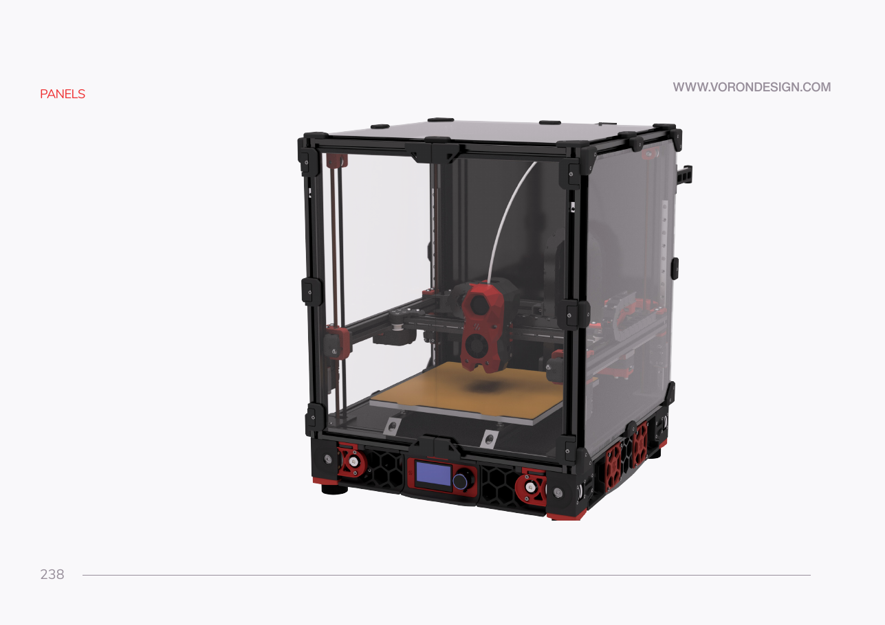 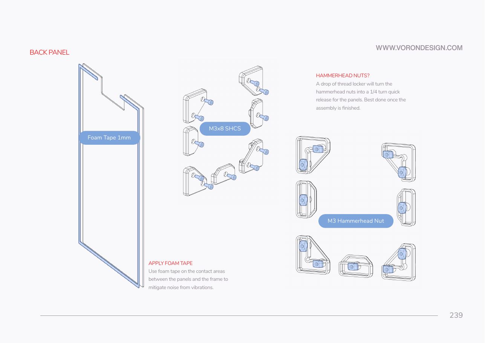
{kind=link}
{kind=link}
What you're looking at: The back panel is 3 mm black acrylic. The 1 mm foam tape on its inner perimeter is a noise damper between acrylic and aluminium, not a gasket, so it is thinner than the 3 mm used on the sides.
Parts: back panel (acrylic, black, 483 × 503 × 3 mm) ×1, 1 mm foam tape.
Do: Peel the protective film from both faces. Run 1 mm foam tape around the perimeter of the face that meets the frame, on the contact areas only. Butt the corners; do not overlap.
Check
Continuous 1 mm tape on all four edges of the inner face; no tape where a clip has to sit; film off both faces.
Caution
Back and top panels get 1 mm foam. Side panels get 3 mm. Mixing them up either lets the gantry rub a side panel or leaves the back panel proud of its clips.
Source: Voron manual p.238 · Voron manual p.239
Step 11.53 — Fit the back-panel clips¶
{kind=link}
What you're looking at: A panel clip is a small printed part that screws to the frame and grips the panel edge in a groove. The 4mm in the name is the stack the groove is cut for: a 3 mm panel plus 1 mm of foam.
Parts: corner_panel_clip_4mm ×4, midspan_panel_clip_4mm ×3, M3×8 SHCS ×7, M3 hammerhead T-nut ×7.
Do:
- Load each clip with a hammerhead nut and an M3×8 SHCS, loose.
- Four corner clips first, then three midspan as p.239 shows.
- Offer the panel up, slide every clip onto its edge, and tighten.
Check
Seven clips engaged on the panel edge, the panel flat against the frame with the 1 mm foam just compressed, no bowed acrylic.
Caution
Clip-thickness assignment. The manual never says which clip goes on which panel; the print plan infers it: 3 mm panel plus 1 mm foam = 4 mm, 7 back and 8 top clips matching _4mm_x7 and _4mm_x8, M3×8 here versus M3×12 on the sides. Test-fit a 4 mm and a 6 mm clip before committing the 31. src
Tip
a drop of thread locker turns each hammerhead nut into a quarter-turn quick release, but only once the whole assembly is finished. [Voron manual p.239]
Source: Voron manual p.239 · Voron manual p.240 · Voron-2 STLs/Panel_Mounting/ · Video: Part 9 @3:54:44
Step 11.54 — Fit the exhaust cover and grill¶
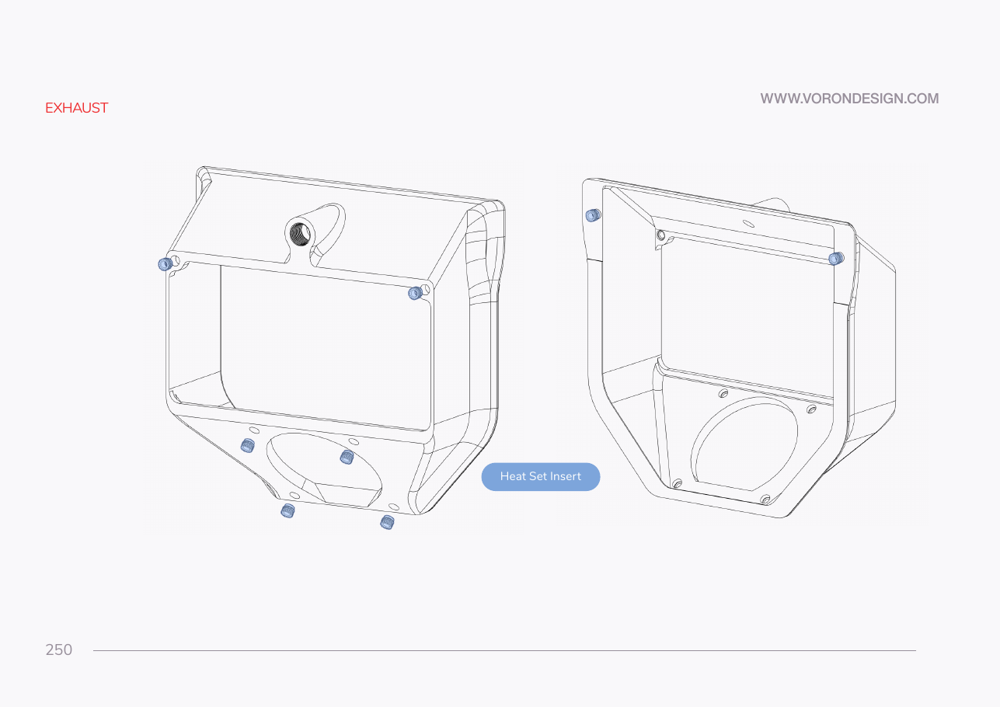 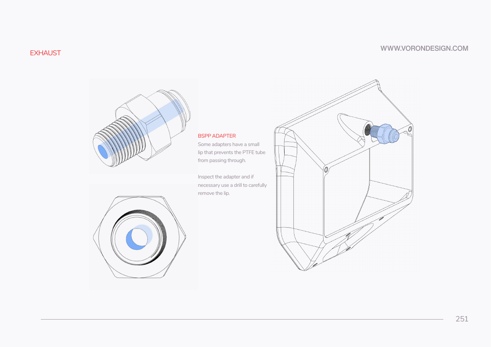 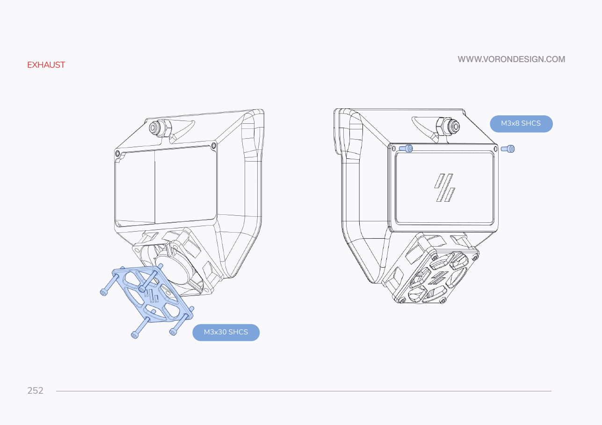 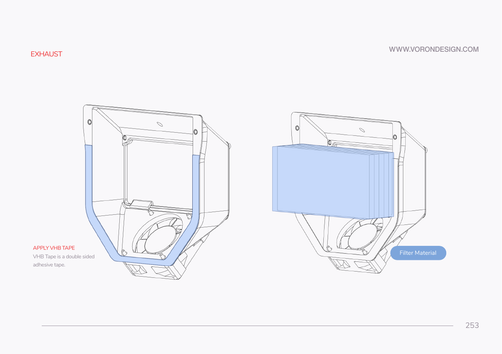 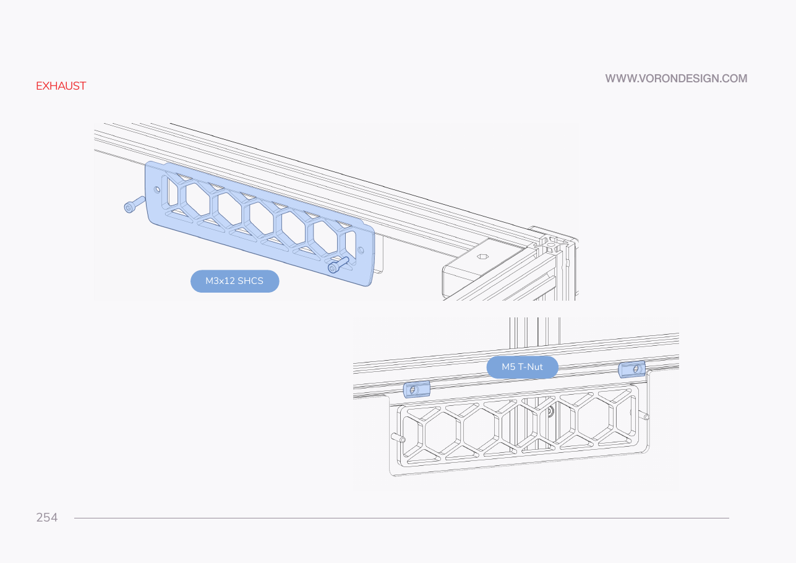 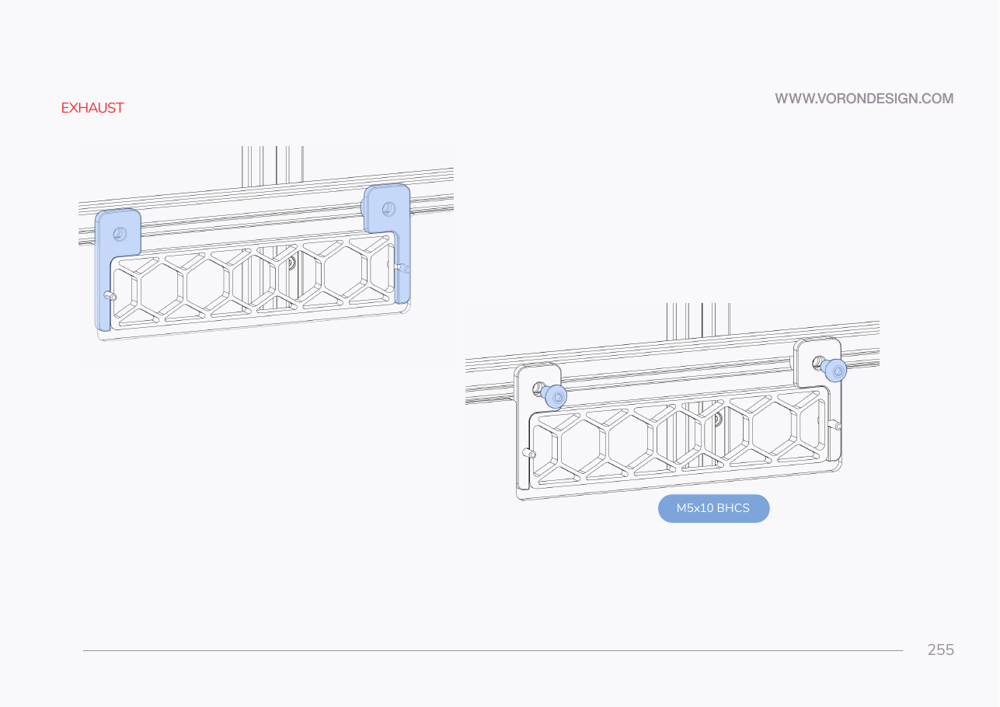 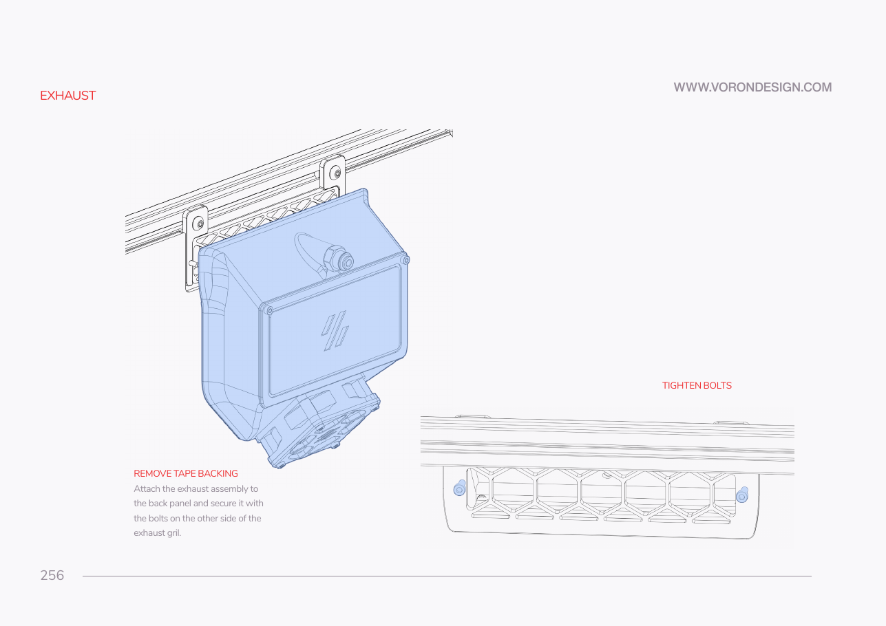
{kind=link}
{kind=link}
{kind=link}
{kind=link}
{kind=link}
{kind=link}
{kind=link}
What you're looking at: The back panel has a rectangular exhaust cut-out meant for the Voron's own exhaust filter housing. Because this build filters internally with the Nevermore instead, the cut-out is simply sealed: LDO's exhaust_cover on the inside face and the Voron exhaust_filter_grill on the outside, bolted through the panel.
Parts: LDO exhaust_cover ×1, Voron exhaust_filter_grill ×1, M3×12 SHCS ×2 (verify on bench).
Do:
- Skip p.250, p.251, p.252, p.253 and p.256; you are not building the Voron exhaust filter.
- Dry-fit both parts against the cut-out, then sandwich it:
exhaust_coveron the inside face,exhaust_filter_grillon the outside, bolted through with M3×12 SHCS.
Check
Cut-out fully covered from both faces, no light through the joint, panel not stressed white around the screw holes, grill sitting flat.
Caution
Rev D+ / LDO: "PAGE 250-253 & 256 SKIP — Please follow our guide for Nevermore mod." LDO's list stops at p.253 and p.256, but p.254–255 hang the housing on [a]_exhaust_filter_mount_x2, not printed here, so its M5 T-nuts and M5×10 BHCS are unused. (verify on bench — LDO publishes no step-by-step for the exhaust cover.) src · src
Source: Voron manual p.250–256 · LDO Build Notes p.250–253, p.256 · LDOVoron2 STLs/ · Video: Extras! @0:06:32
Step 11.55 — Hang the back panel¶
What you're looking at: Everything from 11.52 to 11.54 now goes on as one assembly. Tightening opposite corners rather than round the perimeter keeps the acrylic from being pulled into a bow.
Parts: back panel assembly from 11.52–11.54.
Do: Lift the panel into the clips, check the exhaust cut-out lines up with whatever it needs to clear behind it, and tighten every clip screw. Work opposite corners rather than around the perimeter.
Check
Panel square and flat with even margins, the foam compressed but not squashed, the exhaust cover clearing the Nevermore, umbilical and cables behind it.
Source: Voron manual p.240
Good stopping point · ~25 min since the last one
back panel foam-taped, its seven clips on, exhaust cover and grill sealed into the cut-out, panel hung and screwed down. A panel is either fully clipped or off the machine — never leave one hanging on half its clips.
Step 11.56 — Foam-tape the side panels¶
{kind=link}
What you're looking at: The side panels are clear polycarbonate, tougher than acrylic and the material the gantry gets closest to. Their 3 mm foam is a functional standoff that holds the panel far enough out for the gantry to clear it.
Parts: side panel (PC, clear, 483 × 503 × 3 mm) ×2, 3 mm foam tape.
Do: Peel the film from both faces of both panels. Run 3 mm foam tape around the perimeter of each inner face, corners butted.
Check
3 mm tape on both panels, all four edges, corners butted. Never substitute the 1 mm tape here.
Tip
the manual's reason: "The 3mm foam tape is used on the side panels to prevent the gantry from rubbing on the panels."
Source: Voron manual p.241 · Video: Part 9 @3:17:55
Step 11.57 — Fit the first side panel¶
{kind=link}
What you're looking at: The 6mm clips are the deeper-grooved version, sized for a 3 mm panel plus 3 mm of foam, and they take the longer M3×12 screw to reach the nut. One midspan position on the right-hand panel's front vertical edge stays accessible for the latch at 11.63.
Parts: corner_panel_clip_6mm ×4, midspan_panel_clip_6mm ×4, M3×12 SHCS ×8, M3 hammerhead T-nut ×8.
Do:
- Right-hand side, seen from the front. Load eight clips with M3×12 SHCS.
- Four corners then four midspans as p.241 shows, offer the panel up and tighten every clip. Leave the front-edge midspan only snug for 11.63.
Check
Panel flat with equal margins, and the gantry run through its full XY travel by hand touches nothing.
Caution
Side panels take M3×12 SHCS, not M3×8. The 6 mm clip is thicker and an M3×8 will not reach the hammerhead nut with any thread to spare.
Source: Voron manual p.241 · Voron manual p.242
Step 11.58 — Fit the second side panel¶
What you're looking at: The same eight clips and eight screws on the opposite side. When it is done both stocks of 6 mm clips are exactly used up, which is the arithmetic check that the assignment was right.
Parts: corner_panel_clip_6mm ×4, midspan_panel_clip_6mm ×4, M3×12 SHCS ×8, M3 hammerhead T-nut ×8.
Do: Repeat 11.57 on the left-hand side, the hinge side. All eight clips are fully tight here; nothing on this panel gets replaced.
Check
Both panels on, the gantry clearing both through full travel, all 6 mm clips fitted: 8 corner, 8 midspan. One comes off at 11.63.
Source: Voron manual p.242
Good stopping point · ~25 min since the last one
both side panels foam-taped, clipped and screwed, all sixteen M3×12 in. Both sides are fully on.
Step 11.59 — Fit the top panel¶
{kind=link}
{kind=link}
What you're looking at: The top panel is clear polycarbonate again, but back on 1 mm foam and 4 mm clips like the back panel, because the gantry never comes near it. Fitting it closes the machine on five faces and is what lets the chamber hold heat.
Parts: top panel (PC, clear, 483 × 483 × 3 mm) ×1, 1 mm foam tape, corner_panel_clip_4mm ×4, midspan_panel_clip_4mm ×4, M3×8 SHCS ×8, M3 hammerhead T-nut ×8.
Do:
- Film off both faces, 1 mm foam around the perimeter of the underside.
- Load eight clips, fit four corners and four midspans as p.243 shows, drop the panel on and tighten.
Check
Panel flat with even margins, foam compressed evenly, the machine closed on five faces. All 4 mm clips used: 8 corner, 7 midspan.
Source: Voron manual p.243 · Voron manual p.244
Step 11.60 — Fit the aluminium handlebars¶

What you're looking at: The two aluminium handlebars are an LDO kit extra with no page in the Voron manual. The printed handlebar_spacer under each foot takes up the top panel's thickness, so the load goes into the frame extrusion rather than into the polycarbonate.
Parts: aluminium handle ×2 (LDO), handlebar_spacer_x4 ×4 (batch B07), M5×14 BHCS ×4, M5 hammerhead T-nut ×4.
Do: Put a printed spacer under each handle foot, then bolt each handle down with M5×14 BHCS into M5 hammerhead nuts in the top frame extrusions. One handle per side, positioned so a two-person lift is balanced.
Check
Both handles solid, the spacers carrying the load rather than the polycarbonate, and nothing flexing at the panel on a one-inch lift.
Caution
Rev D+ / LDO: "This optional part offsets the top panel thickness and helps mount the included aluminium handle bar." The 350 Rev D BOM ships two aluminium handles and four M5×14 BHCS. src · src
Source: LDOVoron2 STLs/ · LDO Rev D 350 BOM
Step 11.61 — Do not fit the stock doors¶
{kind=link}
{kind=link}
{kind=link}
{kind=link}
{kind=link}
What you're looking at: The five pages show the stock Voron front: two narrow hinged doors, magnets glued into the front extrusions, printed handles and latches. The Clicky-Clack replaces all of it with one framed door, so nothing here is fitted and the two supplied door panels become spares.
Parts: none. The kit's two 241 × 503 × 3 mm clear PC door panels, and the 6×3 mm magnets those pages would have you glue into the front extrusions, are not used here.
Do:
- Skip all five DOORS pages, p.245 to p.249; the Clicky-Clack replaces them.
- Confirm you never printed
door_hinge_x6,handle_a_x2,handle_b_x2,latch_x2or LDO'sLDO Door/set. - Bag the two stock door panels and the spare magnets.
Check
No stock door hardware installed; the front opening is bare extrusion with the 3 mm foam gasket from 11.51 on it.
Caution
Fitting Clicky-Clack means you also lose LDO's kit-number nameplate, which lives on LDO Door/handle_b_nameplate.stl. Print it and glue it elsewhere if you want it (print plan §3, B10).
Source: Voron manual p.245–249 · LDO Build Notes p.245–249
Good stopping point · ~15 min since the last one
top panel on its eight clips, handlebars bolted through their spacers, and the stock front doors confirmed not-installed. The machine is closed on five faces; the front is still open.
Step 11.62 — Hang the door hinges¶
(no image — see KB3D guide § Frame Assembly)
What you're looking at: The hinges are the lift-off kind: the pins point up, so the door drops on and lifts straight off. The top and bottom corner panel clips on that vertical are the alignment datum, because they are already square to the frame.
Parts: the two hinge assemblies from 11.46–11.47, M3×20 SHCS ×4, M3 roll-in T-nut ×8 (4 on the printer, 4 on the door frame), blue tape.
Do:
- Roll four M3 T-nuts into the left front upright, aligned to the top and bottom corner clips, and four into the door frame's hinge edge.
- Screw each hinge on loosely, pins up, small gap at the top.
Check
Both printer-side halves on with pins up, the door lifting off and dropping back on, hanging parallel with an even gap top to bottom.
Tip
tape the door in the opening first to see where it wants to sit.
Source: KB3D Clicky-Clack install guide § Frame Assembly
Step 11.63 — Fit the latch¶
(no image — see KB3D guide § Frame Assembly)
What you're looking at: The latch is the frame-side half of the magnetic catch, and it arrives already married to the panel clip it displaces. Leaving it loose is deliberate: this is the part you slide to align the closed door in the next step.
Parts: Latch + Panel_Clip assembly from 11.49, M3 hammerhead T-nut (reuse the one from the middle side-panel clip you displace).
Do:
- Remove the midspan clip from the right-hand side panel's front vertical edge and reuse its hammerhead nut.
- Centre the latch vertically on that edge, not fully tightened yet; you move it to align the door at 11.64.
Check
Latch on the frame and still adjustable; its Panel_Clip half is holding the side panel edge exactly as the clip it replaced did.
Source: KB3D Clicky-Clack install guide § Frame Assembly
Step 11.64 — Fit the handle and align the door¶
(no image — see KB3D guide § Frame Assembly)
What you're looking at: Alignment happens by moving the latch and the handle hinges. The paper shim keeps the handle and handle-hinge magnets from snapping together while you position them. A correctly aligned door is drawn onto its foam by the magnets, not merely resting against it.
Parts: handle assembly from 11.50, M3×8 SHCS ×4, M3 roll-in T-nut ×4 (door side).
Do:
- Attach both handle hinges loosely to the door's right-hand edge.
- Shim the magnets apart with paper, then float the handle over the latch until they align.
- Lock the latch, tighten the handle screws, pull the shim.
Check
The door closes with a click, the latch drawing it in against the 3 mm foam, the handle swinging freely, all four sides sealed.
Tip
if the latch will not catch cleanly, the problem is usually hinge alignment, not latch position. Re-align at 11.62 rather than moving the latch. src
Source: KB3D Clicky-Clack install guide § Frame Assembly · Video: Part 9 @4:36:44 (differs: stock hinged doors; this kit gets the Clicky-Clack door (batch B10))
Good stopping point · ~25 min since the last one
door hinges hung, latch fitted, handle on, and the door swings and closes on its magnets. Do not stop with the door hanging on one hinge; it will twist the frame and the acrylic.
Step 11.65 — Thread-lock the hammerhead nuts¶
What you're looking at: Thread locker on the hammerhead nuts stops them turning when the screw is slackened. That converts every panel clip into a quarter-turn quick release: the panel comes off in seconds and the nut does not vanish inside the extrusion.
Parts: thread locker (optional).
Do: Now that every panel is on and aligned, put a drop of thread locker on each panel clip's hammerhead nut.
Check
Every clip still holds its panel; a quarter turn of any clip screw releases the panel edge without the nut falling into the extrusion.
Source: Voron manual p.239
Step 11.66 — Final seal and clearance check¶
(no image — see text)
What you're looking at: Nothing to fit. This is the whole enclosure as one object: five panels, a door, a skirt ring and a screen, all of which have to seal without touching anything that moves. The chamber temperature Ch 14's ASA work depends on is decided here.
Parts: none. Optional: extrusion slot cover, 6 mm.
Do:
- Peel any film. Close the door and check every seam for daylight.
- Push the gantry through full XY and Z by hand; nothing should touch.
- Confirm the touchscreen, AC switch, keystone and spool arm are clear.
Check
No daylight at any panel seam or around the door, no contact in full XY or Z travel, the door latching with one push.
Tip
trim and press the optional 6 mm slot cover into any empty extrusion slots you want to hide.
Source: Voron manual p.241 · Voron manual p.243 · KB3D Clicky-Clack install guide § Frame Assembly · survey §5.2 W11
Good stopping point · ~15 min since the last one
hammerhead nuts thread-locked, every seal and clearance checked, machine closed. Ready for Checkpoint 11.
Checkpoint 11¶
Part A — before Ch 13
- Checkpoint #1 passed and Ch 12 Part 2 (12.11–12.37, Checkpoint 12) done before any of this started; deck panel calipered and the Ch 02 deck supports match it.
- All twelve skirt segments checked for rock on the flat reference; the ring is closed with flush, tight joints all round, and no mini12864 parts exist anywhere on the machine.
- BTT TFT4.3 module in the front-centre position; FFC seated at both ends in the correct orientation (contacts up at the screen, forward at the Pi) with a service loop.
- Two 60×20 bay fans, both in the right-hand fan support, both blowing the same way, joined by the 3×2 splicer PCB on its printed spacer, landing on FAN2/PF7; the left support blanked with the two spare grills.
- Bottom panel bonded on six VHB pads to two rear hinges and four clips, opened and closed once after the VHB cured; four Z belt covers on, correct variant per corner, belts clear through full Z travel.
- Nevermore built and installed: 6 heat-sets, both 5015 fans modified and bolted, bridge PCB meter-checked for shorts, magnets polarity-matched, plenum on the bed extrusions, filter fan on FAN3/PF9 with the 24 V jumper confirmed, carbon fill status recorded.
- Spool holder and bowden retainer fitted; a full spool spins freely with no kink in the PTFE.
- Clicky-Clack door frame square, acrylic retained, hinges and handle assembled, all magnet pairs attracting, hinge side decided (left unless you chose otherwise at 11.44); 3 mm foam on the front face of the front opening.
Part B — after Ch 13
- Ch 12 and Ch 13 complete, including the Ch 06b gantry-squaring pass, before any panel went on.
- Clips test-fitted for thickness before all 31 were committed: 4 mm on back + top with M3×8, 6 mm on both sides with M3×12; none left over, none short. Foam tape correct per panel: 1 mm back and top, 3 mm both sides.
- Gantry run through full XY travel with the side panels on — no contact. Exhaust cover and grill sealing the back panel; no Voron filter housing fitted. Both handlebars on their printed spacers.
- No stock door parts fitted; the Clicky-Clack latches with a click and draws the door onto the 3 mm foam; no daylight at any seam; thread locker on the panel-clip hammerhead nuts.
Common mistakes¶
- Closing the machine too early. Starting before Checkpoint #1 seals an unverified electronics bay; fitting the back, side and top panels before Ch 13 means taking them off again for gantry squaring and the startup wizard's motor, endstop and probe checks — an hour, plus the foam tape you tear getting them off (survey §5.2 W8).
- Mixing up the foam tape. 1 mm on back and top, 3 mm on the sides. The 3 mm is not cosmetic — it is the standoff that keeps the gantry off the panel. A side panel taped with 1 mm gets scored.
- Assuming the 4 mm and 6 mm clips are interchangeable. They are not, and the screw length gives it away: M3×8 for the 4 mm clips, M3×12 for the 6 mm. Test-fit one of each before committing 31 clips.
- Resolving the deck panel thickness from the documents. LDO's build note says 4 mm and LDO's own BOM says 3 mm. Caliper it. If Ch 02 got the wrong deck supports, fix it before the skirt ring goes on.
- Trusting the Nevermore guide's board. It was written for a BTT Octopus:
PD13. This machine is a Leviathan — FAN3 / PF9, 24 V jumper confirmed. And do not skip the multimeter check on the bridge PCB; a short across the 24 V fan rail takes the controller with it. Same class of mistake: the 3×2 bay-fan splicer must sit on its printed spacer, not bare on the extrusion. - Forcing a Clicky-Clack latch that will not catch, or gluing the cartridge magnets without marking polarity first. The latch is almost never the problem — re-hang the door at the hinges. And backwards magnets mean digging cyanoacrylate-bonded neodymium out of a printed part.
Next¶
Ch 13 — Initial startup, on the machine Ch 12 already configured (leviathan-printer-rev-d-sbv2.cfg, with LDO's Nevermore [heater_fan exhaust_fan] replaced by [fan_generic nevermore] on the Leviathan's PF9); then back here for Part B.